<!doctype html>
<html lang="en">
<head>
  <meta charset="utf-8">
  <meta name="viewport" content="width=device-width, initial-scale=1">
  <title>arxiv digest — 2026-07-15</title>
  <style>
:root {
  --bg: #ffffff;
  --fg: #1f2328;
  --muted: #59636e;
  --border: #d0d7de;
  --card: #f6f8fa;
  --link: #0969da;
}
body {
  max-width: 980px;
  margin: 0 auto;
  padding: 2rem 1rem 5rem;
  font-family: -apple-system, BlinkMacSystemFont, "Segoe UI", Helvetica, Arial, sans-serif;
  line-height: 1.55;
  color: var(--fg);
  background: var(--bg);
}
a { color: var(--link); }
img { max-width: 100%; height: auto; }
pre, code { background: var(--card); border-radius: 6px; }
pre { padding: 1rem; overflow-x: auto; }
blockquote { border-left: 4px solid var(--border); padding-left: 1rem; color: var(--muted); }
details { margin: 0.6rem 0; }
summary { cursor: pointer; font-weight: 600; }
.paper-figures-scroll {
  display: flex;
  gap: 1rem;
  overflow-x: auto;
  overscroll-behavior-x: contain;
  padding: 0.75rem 0.25rem 1rem;
  margin: 1rem 0 1.25rem;
  border-top: 1px solid var(--border);
  border-bottom: 1px solid var(--border);
  scroll-snap-type: x proximity;
}
.paper-figure-card {
  flex: 0 0 min(260px, 72vw);
  scroll-snap-align: start;
  background: var(--card);
  border: 1px solid var(--border);
  border-radius: 12px;
  padding: 0.55rem;
}
.paper-figure-card img {
  display: block;
  width: 100%;
  max-height: 240px;
  object-fit: contain;
  background: white;
  border-radius: 8px;
}
.paper-figure-caption {
  display: block;
  margin-top: 0.5rem;
  color: var(--muted);
  font-size: 0.85rem;
}
.figure-strip-hint {
  color: var(--muted);
  font-size: 0.9rem;
  margin-bottom: -0.3rem;
}
</style>
  <!-- MathJax: renders $...$ inline math and $$...$$ display math, plus
       \(...\) and \[...\]. Loaded from the official CDN; works offline
       once cached. Configured to skip code/pre blocks so arxiv IDs that
       look like dollar amounts don't get mangled. -->
  <script>
    window.MathJax = {
      tex: {
        inlineMath: [['$', '$'], ['\\(', '\\)']],
        displayMath: [['$$', '$$'], ['\\[', '\\]']],
        processEscapes: true,
        processEnvironments: true
      },
      options: {
        skipHtmlTags: ['script', 'noscript', 'style', 'textarea', 'pre', 'code'],
        ignoreHtmlClass: 'tex2jax_ignore',
        processHtmlClass: 'tex2jax_process'
      }
    };
  </script>
  <script id="MathJax-script" async
    src="https://cdn.jsdelivr.net/npm/mathjax@3/es5/tex-chtml.js"></script>
</head>
<body>
<header style="background-color: #333; color: white; padding: 15px; margin-bottom: 20px;">
  <h1 style="margin: 0; font-size: 24px;">
    <a href="https://ochelpan.github.io/arXiv_clean/" style="color: white; text-decoration: none;">Main</a>
  </h1>
</header>

<h1>Daily arXiv Report</h1>

<hr>
<p>
<a href="index.html">← Index</a>
 · <a href="papers_07.html">← Previous</a> · <a href="papers_09.html">Next →</a>
</p>
<hr>

<h2>Papers 141–160</h2>
<p><a id="paper-2607.10280"></a></p>
<h3 id="scaling-adaptive-non-local-observable-quantum-super-resolution-via-matrix-product-states"><a href="http://arxiv.org/abs/2607.10280v1">Scaling Adaptive Non-Local Observable Quantum Super-Resolution via Matrix Product States</a></h3>
<p><strong>Authors:</strong> Shih-Lung Yu, Ming-Kang Ho, Tai-Yue Li, Sheng Yun Wu<br>
<strong>Type:</strong> both · <strong>Category:</strong> numerical methods · <strong>PDF:</strong> <a href="https://arxiv.org/pdf/2607.10280v1">https://arxiv.org/pdf/2607.10280v1</a><br>
<strong>Analysis basis:</strong> full PDF text, analyzed in chunks
<strong>Topic relevance:</strong> <code>methods for driven-dissipative</code> <strong>1/5</strong></p>
<div class="figure-strip-hint">↔ Scroll figures horizontally</div>
<div class="paper-figures-scroll">
<figure class="paper-figure-card">
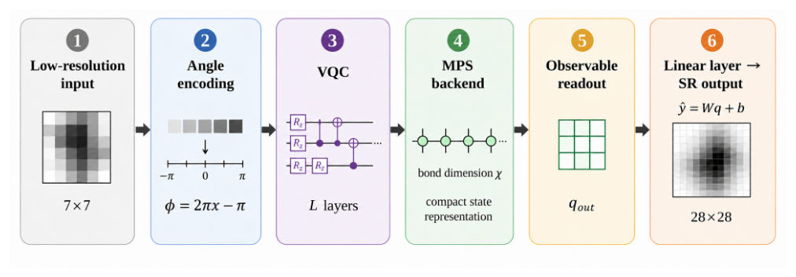
<figcaption class="paper-figure-caption"><b>Fig 1.</b> Fig. 1. Workflow of the proposed MPS-ANO-VQC framework for Fashion-MNIST SR. A 7 × 7 low-resolution image is mapped to a 49-qubit input state and simulated with an MPS backend. Image-local adaptive observables produce quantum features, which are passed to a classical linear layer to reconstruct the 28 × 28 high-resolution image.</figcaption>
</figure>
<figure class="paper-figure-card">
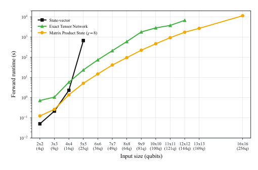
<figcaption class="paper-figure-caption"><b>Fig 2.</b> Fig. 2. Forward-runtime comparison among statevector simulation, Exact TN contraction, and MPS simulation for ANO-VQC quantum-feature extraction as the input image size and qubit count increase. MPS uses a fixed bond dimension of χ = 8.</figcaption>
</figure>
<figure class="paper-figure-card">
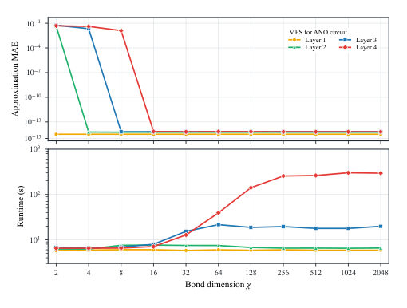
<figcaption class="paper-figure-caption"><b>Fig 3.</b> Fig. 3. Influence of the MPS bond dimension χ on approximation accuracy and runtime for 49-qubit ANO circuits with L = 1–4 layers. Top: mean absolute error (MAE) between MPS and the Exact TN contraction reference. Bottom: MPS simulation runtime as a function of χ. The χ axis is shown on a log2 scale.</figcaption>
</figure>
<figure class="paper-figure-card">
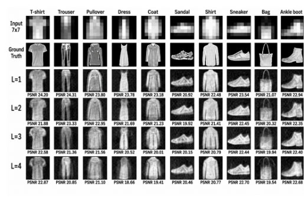
<figcaption class="paper-figure-caption"><b>Fig 4.</b> Fig. 4. Representative Fashion-MNIST SR reconstructions for different circuit depths using a fixed MPS bond dimension of χ = 16.</figcaption>
</figure>
</div>

<p><strong>Summary.</strong> This paper proposes using Matrix Product States (MPS) as a scalable computational backend for simulating Variational Quantum Circuits designed for image super-resolution. It demonstrates that MPS overcomes the memory and computational bottlenecks faced by statevector or exact tensor network methods when scaling up input sizes. The results confirm MPS's utility, showing that shallow circuits can achieve optimal performance metrics for SR tasks.</p>
<p><strong>Why it may be interesting.</strong> The comparison between different tensor network simulation techniques (Statevector, Exact TN, MPS) is highly relevant to understanding resource scaling in quantum machine learning algorithms applied to physical problems.</p>
<details>
<summary>Detailed structure</summary>
<p><strong>Main problem.</strong> The work addresses the challenge of simulating quantum feature extraction for image super-resolution (SR) using Variational Quantum Circuits (VQCs) when input sizes exceed the practical limits of statevector or exact tensor network simulations.</p>
<p><strong>Main result.</strong> Matrix Product States (MPS) provide a scalable simulation backend, successfully performing forward feature extraction on up to 16x16 inputs where other methods fail; furthermore, shallow circuits ($L=1$) achieved the best reconstruction quality metrics for SR tasks.</p>
<p><strong>Method.</strong> The authors developed and benchmarked an MPS simulation framework to approximate the expectation values of Adaptive Non-Local Observable VQCs (ANO-VQCs) used in image super-resolution.</p>
<p><strong>Model / system.</strong> The model involves mapping low-resolution pixels to qubits, encoding them via RY rotations/CNOTs, and extracting quantum features using trainable Hermitian observables ($\langle H_q 
angle$). The simulation is performed on the MPS representation of the quantum state $|\psi
angle$.</p>
<p><strong>Key observables.</strong> Loss (MSE + LPIPS), PSNR, SSIM, Mean Absolute Error (MAE) comparing MPS to Exact TN.</p>
<p><strong>Important parameters / regimes.</strong> Input size ($2	imes2$ up to $16	imes16$), Circuit Depth ($L=1$ to $4$), and MPS Bond Dimension ($\chi$).</p>
<p><strong>Assumptions / limitations.</strong> The primary approximation is using the MPS ansatz, which requires increasing bond dimension $\chi$ with circuit depth $L$ to maintain accuracy relative to Exact TN contraction.</p>
<p><strong>Figures summary.</strong> Figures compare simulation runtimes (Statevector vs. Exact TN vs. MPS) across varying input sizes; another figure illustrates how required bond dimension ($\chi$) increases with circuit depth ($L$) for fixed inputs.</p>
<p><strong>Paper structure.</strong> The paper first introduces the ANO-VQC framework for SR, then compares the computational scaling of Statevector, Exact TN, and MPS methods. It analyzes the accuracy vs. cost trade-off by sweeping $\chi$ for a fixed input size, concluding with performance metrics on a full SR task.</p>
</details>
<details>
<summary>Abstract</summary>
<p>This work presents a matrix product state (MPS) simulation framework for adaptive non-local observable variational quantum circuits (ANO-VQCs) in image super-resolution (SR) beyond the practical limits of statevector simulation. Runtime benchmarks on a single NVIDIA RTX 4070 GPU show that, under the tested shallow-circuit setting, MPS completes ANO-VQC forward feature extraction for individual inputs up to 16 x 16 pixels (256 qubits), whereas statevector simulation encounters a memory bottleneck at 6 x 6 inputs (36 qubits) and exact tensor-network (Exact TN) contraction becomes computationally impractical beyond 12 x 12 inputs (144 qubits). For a fixed 7 x 7 input (49 qubits), a bond-dimension sweep over depths L = 1 to L = 4 shows that the required MPS bond dimension increases with circuit depth. Using Exact TN contraction as the reference, the bond dimension required for near-exact agreement increases from chi = 2 at L = 1 to chi = 16 at L = 4. Finally, 7 x 7 to 28 x 28 Fashion-MNIST SR training with chi = 16 shows that the shallow L = 1 model achieves the lowest loss and best LPIPS, PSNR, and SSIM among the tested depths. These results highlight MPS as a scalable and controllable simulation backend for ANO-VQC image SR and as a practical tool for studying large-scale quantum algorithms.</p>
</details>
<p><sub><a href="#top">↑ back to top</a></sub></p>
<h2 id="other-papers-16">Other papers (16)</h2>
<p><em>Papers from primary archives without highlighted authors or any topic match. Click to expand.</em></p>
<details>
<summary>Show other papers</summary>

<p><a id="paper-2607.11701"></a></p>
<h3 id="math1394math-overcoming-classical-bottlenecks-in-drug-discovery-via-quantum-multiple-kernel-learning"><a href="http://arxiv.org/abs/2607.11701v1">$\mathtt{Q^2SAR}$: overcoming classical bottlenecks in drug discovery via quantum multiple kernel learning</a></h3>
<p><strong>Authors:</strong> Mariano Caruso, Daniel Ruiz, Alejandro Giraldo, Guido Bellomo<br>
<strong>Type:</strong> both · <strong>Category:</strong> quantum information and computing · <strong>PDF:</strong> <a href="https://arxiv.org/pdf/2607.11701v1">https://arxiv.org/pdf/2607.11701v1</a><br>
<strong>Analysis basis:</strong> full PDF text, analyzed in chunks</p>
<div class="figure-strip-hint">↔ Scroll figures horizontally</div>
<div class="paper-figures-scroll">
<figure class="paper-figure-card">
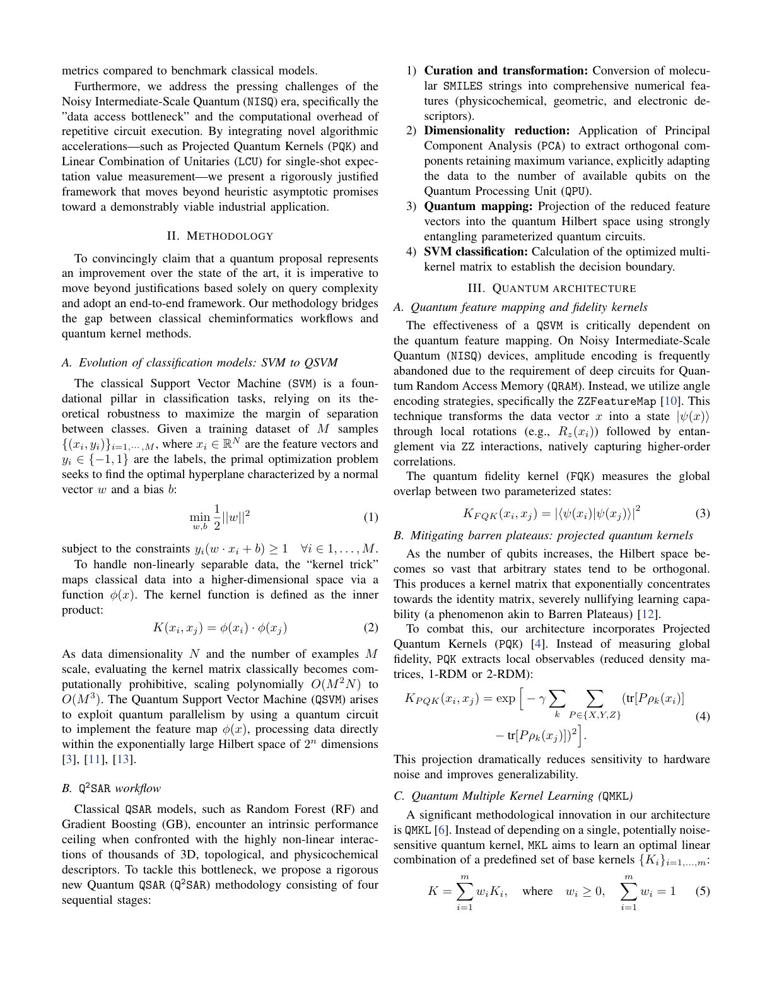
<figcaption class="paper-figure-caption"><b>Fig 1.</b> Low-resolution page preview, page 2</figcaption>
</figure>
<figure class="paper-figure-card">
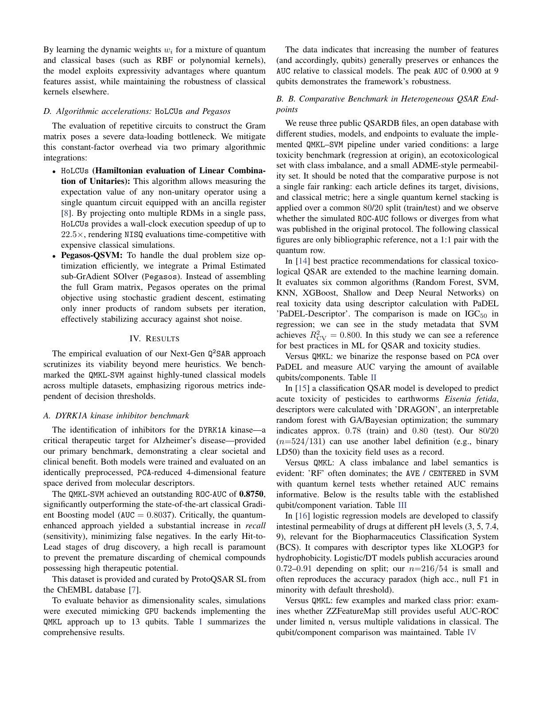
<figcaption class="paper-figure-caption"><b>Fig 2.</b> Low-resolution page preview, page 3</figcaption>
</figure>
<figure class="paper-figure-card">
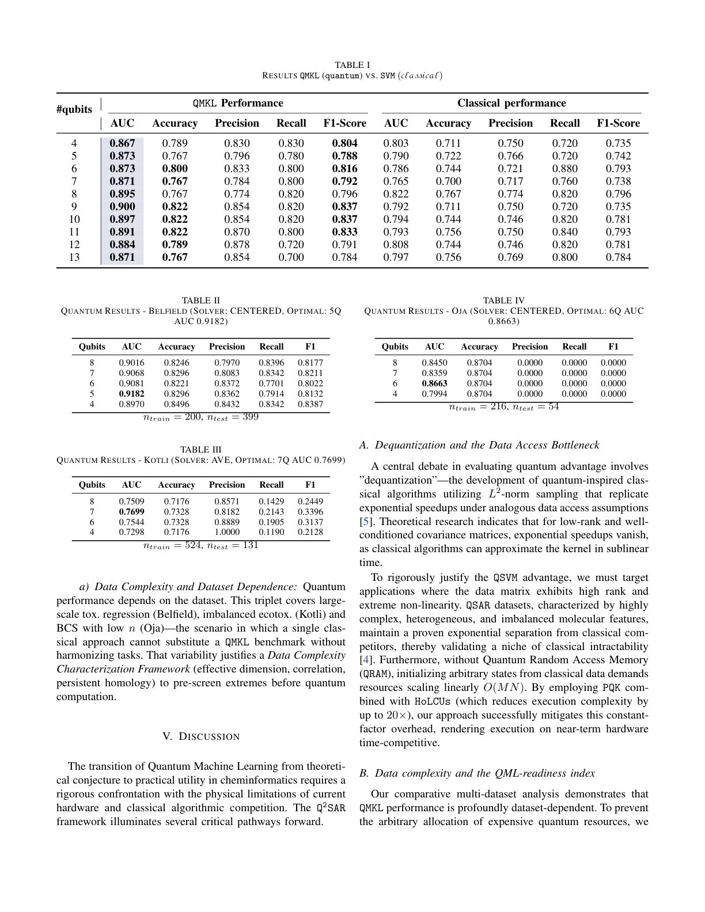
<figcaption class="paper-figure-caption"><b>Fig 3.</b> Low-resolution page preview, page 4</figcaption>
</figure>
<figure class="paper-figure-card">
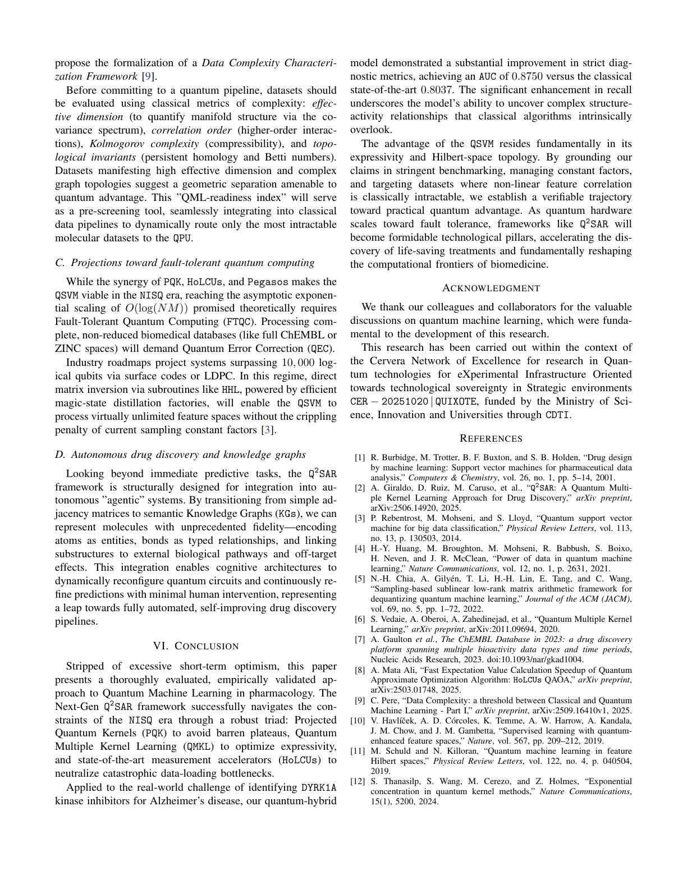
<figcaption class="paper-figure-caption"><b>Fig 4.</b> Low-resolution page preview, page 5</figcaption>
</figure>
<figure class="paper-figure-card">

<figcaption class="paper-figure-caption"><b>Fig 5.</b> Low-resolution page preview, page 6</figcaption>
</figure>
</div>
<p><strong>Summary.</strong> This work introduces $\text{Q}^2\text{SAR}$, a quantum-enhanced framework that uses Quantum Multiple Kernel Learning (QMKL) to improve drug discovery predictions beyond classical limitations. By encoding molecular data into quantum states, it achieves superior performance on benchmark datasets compared to state-of-the-art classical models. The methodology is designed for near-term quantum hardware while paving the way for fully autonomous drug design pipelines.</p>
<p><strong>Why it may be interesting.</strong> The paper directly applies quantum machine learning techniques to a complex data science problem, utilizing concepts like kernel methods in high-dimensional Hilbert spaces, which touches upon the theoretical limits of quantum computation for feature mapping.</p>
<details>
<summary>Detailed structure</summary>
<p><strong>Main problem.</strong> Classical Quantitative Structure-Activity Relationship (QSAR) modeling struggles to capture the highly complex, non-linear interactions in molecular data for drug discovery.</p>
<p><strong>Main result.</strong> The proposed Quantum Multiple Kernel Learning framework achieved an AUC of 0.8750 on a kinase inhibitor benchmark, significantly outperforming classical state-of-the-art models (AUC = 0.8037).</p>
<p><strong>Method.</strong> It employs a QMKL approach using QSVMs, encoding molecular descriptors into quantum Hilbert spaces via specialized feature maps.</p>
<p><strong>Model / system.</strong> The framework utilizes Quantum Support Vector Machines and incorporates advanced techniques like Projected Quantum Kernels (PQK) to mitigate barren plateaus and Hamiltonian evaluation of Linear Combination of Unitaries (HoLCUs) for efficient measurement.</p>
<p><strong>Key observables.</strong> Area Under the Curve (AUC) score, Accuracy, Precision, Recall, F1-Score.</p>
<p><strong>Important parameters / regimes.</strong> Qubit count (4 to 13), $\gamma$ (for PQK), and dataset type (e.g., DYRK1A kinase).</p>
<p><strong>Assumptions / limitations.</strong> The quantum advantage relies on targeting applications with high rank and extreme non-linearity, and the framework is designed for NISQ era constraints.</p>
<p><strong>Figures summary.</strong> Tables compare QMKL vs. classical SVM performance across varying qubit numbers (4 to 13) on multiple benchmarks including DYRK1A, Belfield, Kotli, and Oja.</p>
<p><strong>Paper structure.</strong> The paper establishes the QSAR problem bottleneck, introduces the quantum-enhanced $\text{Q}^2\text{SAR}$ framework using QMKL/QSVMs, details algorithmic accelerations (PQK, HoLCUs), benchmarks performance across multiple datasets, and concludes by outlining integration into autonomous cognitive architectures via Knowledge Graphs.</p>
</details>
<details>
<summary>Abstract</summary>
<p>Quantitative Structure-Activity Relationship ($\mathtt{QSAR}$) modeling is a foundational computational methodology in early-stage drug discovery, heavily relied upon for predicting compound toxicity, bioavailability, and therapeutic potential. However, classical methods often struggle to effectively map the highly complex, non-linear, and high-dimensional interactions inherent in molecular data, leading to reduced predictive accuracy and costly late-stage clinical failures. In this paper, we present a Quantum Multiple Kernel Learning ($\mathtt{QMKL}$) framework, dubbed Next-Gen $\mathtt{Q^2SAR}$, that leverages Quantum Support Vector Machines ($\mathtt{QSVMs}$) to overcome these classical limitations. By encoding molecular descriptors into exponentially large quantum Hilbert spaces, our approach substantially enhances the expressiveness of non-linear modeling. Benchmarking our quantum-enhanced framework on a dataset targeting the $\mathtt{DYRK1A}$ kinase (a critical target for Alzheimer's disease), the $\mathtt{QMKL}$-$\mathtt{SVM}$ achieves an impressive Area Under the Curve ($\mathtt{AUC}$) score of $0.8750$, significantly outperforming classical state-of-the-art Gradient Boosting models ($\mathtt{AUC} = 0.8037$). Furthermore, we establish a theoretical and empirical pathway toward resolving classical data bottlenecks through projected quantum kernels ($\mathtt{PQK}$) and measurement accelerators. As quantum computing architecture matures, this framework paves the way for autonomous cognitive architectures and self-improving drug discovery pipelines, promising to unlock deeper insights across vast chemical spaces and to accelerate the development of life-saving therapeutics.</p>
</details>
<p><sub><a href="#top">↑ back to top</a></sub></p>

<p><a id="paper-2607.10181"></a></p>
<h3 id="anyons-and-inherently-complex-f-symbols"><a href="http://arxiv.org/abs/2607.10181v1">Anyons and Inherently Complex F-symbols</a></h3>
<p><strong>Authors:</strong> Matthew Buican, Peter Huston, Jiannis K. Pachos<br>
<strong>Type:</strong> theory · <strong>Category:</strong> other · <strong>PDF:</strong> <a href="https://arxiv.org/pdf/2607.10181v1">https://arxiv.org/pdf/2607.10181v1</a><br>
<strong>Analysis basis:</strong> full PDF text, analyzed in chunks</p>
<div class="figure-strip-hint">↔ Scroll figures horizontally</div>
<div class="paper-figures-scroll">
<figure class="paper-figure-card">
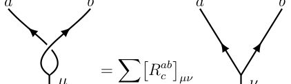
<figcaption class="paper-figure-caption"><b>Fig 1.</b> Fig. 1: The F- and R-symbols of a braided fusion category. The F-symbols describe the associativity of fusion, while the R-symbols describe braiding. Fusion spaces, V z xy ∼= Hom(x ⊗y, z), are represented diagrammatically by trivalent vertices in which x and y fuse to produce z. The complex dimension of V z xy is the fusion multiplicity, N z xy. The F- and</figcaption>
</figure>
</div>
<p><strong>Summary.</strong> This theoretical paper investigates the mathematical constraints on anyon models in 2+1 dimensions, focusing on the associativity data encoded in F-symbols. The authors prove that these symbols can be 'inherently complex'—meaning their non-real phases are unavoidable—by analyzing specific group representation categories lacking charge-conjugation symmetry. This deepens our understanding of topological order beyond simple braiding statistics.</p>
<p><strong>Why it may be interesting.</strong> This work pushes the boundaries of topological quantum field theory by showing that simple invariants (like modular data) are insufficient, requiring deeper analysis of fusion associativity structures for a complete physical description.</p>
<details>
<summary>Detailed structure</summary>
<p><strong>Main problem.</strong> The central question is whether the associativity data (F-symbols) governing anyon fusion rules must be real-valued, or if they can possess inherent complex phases.</p>
<p><strong>Main result.</strong> The authors demonstrate that inherently complex F-symbols do exist in unitary premodular categories, exemplified by $  ext{Rep}(\mathbb{Z}_7
times\mathbb{Z}_3)$ and $   ext{Rep}(\mathbb{Z}_5
times\mathbb{Z}_4)$.</p>
<p><strong>Method.</strong> The analysis involves calculating gauge-invariant quantities built from F-symbols using representation theory techniques applied to specific group extensions, comparing them against known symmetries like charge-conjugation.</p>
<p><strong>Model / system.</strong> The study concerns anyons in $2+1$ dimensions, mathematically modeled by unitary braided spherical fusion categories (UMTCs), specifically analyzing the representations of semidirect products of cyclic groups ($  ext{Rep}(\mathbb{Z}_n 
times \mathbb{Z}_m)$).</p>
<p><strong>Key observables.</strong> F-symbols ($\mathcal{F}$), R-symbols, and derived gauge-invariant quantities whose non-real nature proves inherent complexity.</p>
<p><strong>Important parameters / regimes.</strong> The structure of the underlying group extensions (e.g., $\mathbb{Z}_7
times\mathbb{Z}_3$), which dictates the fusion rules and symmetry properties.</p>
<p><strong>Assumptions / limitations.</strong> The results are consistent with the converse of a statement linking real F-symbols to the existence of a charge-conjugation symmetry, and the examples studied lack this symmetry.</p>
<p><strong>Figures summary.</strong> Figures illustrate the definitions of F- and R-symbols, showing how they govern associativity (trivalent vertices) and braiding in the topological model.</p>
<p><strong>Paper structure.</strong> The paper progresses by establishing that modular data is insufficient for full classification, then develops methods to test for inherent complexity using tailored invariants, culminating in explicit calculations for specific group representations ($    ext{Rep}(\mathbb{Z}_7
times\mathbb{Z}_3)$ and $   ext{Rep}(\mathbb{Z}_5
times\mathbb{Z}_4)$) that yield complex results.</p>
</details>
<details>
<summary>Abstract</summary>
<p>Anyons in $2+1$ dimensions are not only characterized by exotic braiding statistics but also by intricate fusion properties. Two anyons may fuse into multiple topological charge sectors, and associativity of fusing three anyons to produce a fixed charge sector is governed by $F$-symbols. While braiding invariants, such as the modular data, are typically complex valued, a complete description of general anyon models requires understanding the arithmetic properties of its fusion associativity data as well. The $F$-symbols for many of the most common $2+1$d topological orders, including all Abelian anyon models as well as Fibonacci and Ising anyons, can be made real valued. We show this phenomenon is not universal by exhibiting braided fusion categories whose $F$-symbols cannot be made real. We call such $F$-symbols \lq\lq inherently complex." The examples we study lack a charge-conjugation symmetry and our results are therefore consistent with the converse of a statement proved in a companion work linking real $F$-symbols in braided fusion categories with the existence of a suitable charge-conjugation symmetry. We analyse the smallest-rank braided fusion categories we know of with inherently complex $F$-symbols: ${\rm Rep}(\mathbb{Z}_7\rtimes\mathbb{Z}_3)$ and ${\rm Rep}(\mathbb{Z}_5\rtimes\mathbb{Z}_4)$. Consequently, the corresponding $\mathcal Z({\rm Rep}(\mathbb{Z}_7\rtimes\mathbb{Z}_3))$ and $\mathcal Z({\rm Rep}(\mathbb{Z}_5\rtimes\mathbb{Z}_4))$ anyon models also have inherently complex $F$-symbols. Our presentation connects these examples with recent results on classifying anyons beyond modular data.</p>
</details>
<p><sub><a href="#top">↑ back to top</a></sub></p>

<p><a id="paper-2607.11371"></a></p>
<h3 id="conformal-nature-of-quantum-phase-transitions-via-fuzzy-three-sphere-regularization"><a href="http://arxiv.org/abs/2607.11371v1">Conformal Nature of Quantum Phase Transitions via Fuzzy Three-Sphere Regularization</a></h3>
<p><strong>Authors:</strong> Xue Meng, Liangdong Hu, Wei Zhu<br>
<strong>Type:</strong> theory · <strong>Category:</strong> statistical mechanics · <strong>PDF:</strong> <a href="https://arxiv.org/pdf/2607.11371v1">https://arxiv.org/pdf/2607.11371v1</a><br>
<strong>Analysis basis:</strong> full PDF text, analyzed in chunks</p>
<div class="figure-strip-hint">↔ Scroll figures horizontally</div>
<div class="paper-figures-scroll">
<figure class="paper-figure-card">
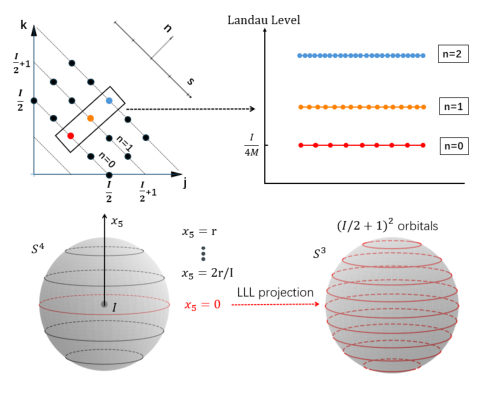
<figcaption class="paper-figure-caption"><b>Fig 1.</b> FIG. 1. Landau levels of fuzzy three-sphere S3. (Top) Each Landau level on fuzzy S4 geometry corresponding to a SO(5) irreducible representation [33, 34], which can be de- composed into blocks of SO(4) representations labeled by two integer numbers (n, s) [35]. Taking s = 0 gives the SO(4) Landau levels on fuzzy S3. (Bottom) For n = 0, the fuzzy S3 locate along x5-axis on S4 with equal spacing. In partic- ular, x5 = 0 latitude (red dashed line) on S4 corresponds to the n = 0, s = 0 SO(4) representation, i.e., the lowest SO(4) Landau level of S3.</figcaption>
</figure>
<figure class="paper-figure-card">
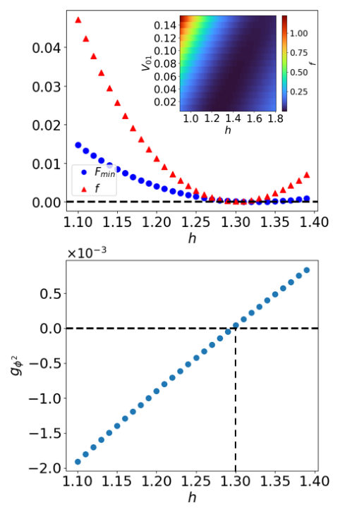
<figcaption class="paper-figure-caption"><b>Fig 2.</b> FIG. 2. Locating the critical point. (Top) Cost functions f (Eq. 28) and Fmin (Eq. 30) as a function of transverse field h. (Bottom) In the perturbative theory, the coupling gϕ2 which minimizing the cost function Fmin at each h. The calculations are performed for the system size N = 9. For the potential V0,0 = 1.2, V0,1 = V1,0 = 0.02, the critical point is determined to be hc ≈1.3. (Inset) Heatmap of f(h, V0,1) by setting V0,0 = 1.2.</figcaption>
</figure>
<figure class="paper-figure-card">
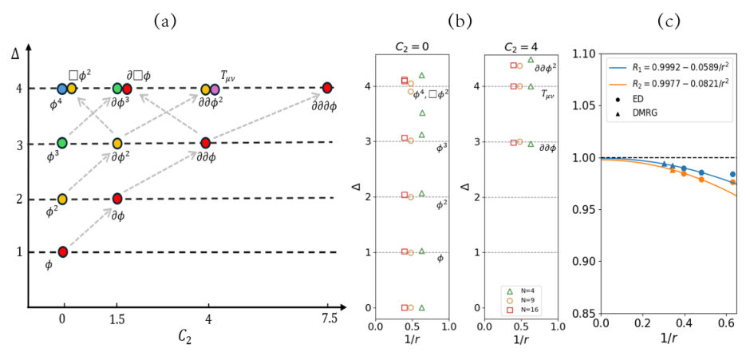
<figcaption class="paper-figure-caption"><b>Fig 3.</b> FIG. 3. Operator spectra for Ising transition. (a) Schematic plot of the tower structure of conformal multiplets of d = 4 free boson CFT. The grey arrow marks the operation of the conformal generator and the fields belong to the same multiplet are labeled by the same color. (b) The low-lying operator spectra living in Casimir number C2 = 0 and 4. System sizes with N = 4, 9, 16 electrons (corresponding to SU(2) monopole charge I = 2, 4, 6) are shown. (c) The ratios R1,2 versus system sizes 1/r (equivalent to SU(2) monopole charge I = 4, 6, 8, 10). Finite-size scaling gives R1 →0.9976 and R2 →0.9962, both of which are close to the expectation ∆ϕ = 1. I = 4, 6 are obtained by the exact...</figcaption>
</figure>
<figure class="paper-figure-card">
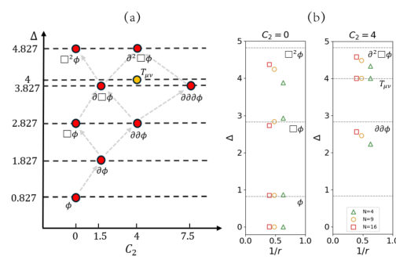
<figcaption class="paper-figure-caption"><b>Fig 4.</b> FIG. 4. Operator spectra for Yang-Lee transition. (a) Schematic plot of the tower structure of conformal multiplets of d = 4 Yang-Lee CFT. (b) The low-lying operator spectra living in Casimir number C2 = 0 and 4. System sizes with N = 4, 9, 16 electrons are shown. The parameters are set to be V0,0 = 0.6, V0,1 = V1,0 = 0.2 and hx = 3.5. The critical hz c are determined by the optimization of cost function for each system size.</figcaption>
</figure>
</div>
<p><strong>Summary.</strong> The paper develops a method using fuzzy three-sphere regularization to analyze quantum phase transitions in (3+1) dimensions. By projecting the system onto Landau levels and comparing computed energy spectra against theoretical CFT predictions, the authors successfully locate critical points for Ising and Yang-Lee models. This establishes a novel pathway for microscopically verifying emergent conformal symmetry in higher-dimensional condensed matter systems.</p>
<p><strong>Why it may be interesting.</strong> This work provides a powerful geometric tool—fuzzy geometry on spheres—to study quantum criticality in higher dimensions, linking condensed matter phase transitions directly to the rigorous mathematical structure of Conformal Field Theory.</p>
<details>
<summary>Detailed structure</summary>
<p><strong>Main problem.</strong> The primary goal is to expose emergent conformal symmetry at the (3+1)-D quantum critical point, generalizing techniques from fuzzy two-spheres ($S^2$) to higher dimensions.</p>
<p><strong>Main result.</strong> The framework successfully maps Quantum Phase Transitions (QPTs) belonging to Ising and Yang-Lee universality classes onto an effective Hamiltonian defined on a fuzzy three-sphere, yielding consistent estimates for critical fields and confirming near-CFT scaling behavior.</p>
<p><strong>Method.</strong> The study employs radial quantization and utilizes the state-operator correspondence ($\delta E_n \propto \Delta_n$) by minimizing cost functions that compare calculated energy spectra to expected CFT scaling dimensions.</p>
<p><strong>Model / system.</strong> The investigation focuses on (3+1)-D quantum models, specifically the Ising and Yang-Lee transitions, realized through Landau level projection onto the fuzzy three-sphere ($S^3$). The Hamiltonian involves density-density interactions and transverse/longitudinal fields.</p>
<p><strong>Key observables.</strong> Energy spectra $\{E_n\}$ at criticality, scaling dimensions ($\Delta_\phi$, $\Delta_{\phi^2}$), and ratios of energy gaps ($R_{1,2}$) used to test for conformal invariance.</p>
<p><strong>Important parameters / regimes.</strong> The critical fields $h_c$ (for Ising) and $h_z^c$ (for Yang-Lee); the coupling constants defining the Hamiltonian terms.</p>
<p><strong>Assumptions / limitations.</strong> The approach assumes the successful generalization of spherical background techniques to higher dimensions ($d>2$) and relies on projecting the system into the Lowest Landau Level (LLL) subspace.</p>
<p><strong>Figures summary.</strong> Figures illustrate Landau levels on $S^3$ derived from $    ext{SO}(5)$ representations, show the evolution of cost functions ($f$ and $F_{\min}$) versus the transverse field $h$, and display operator spectra and ratios confirming CFT structure.</p>
<p><strong>Paper structure.</strong> The paper introduces the generalization of fuzzy sphere regularization to $S^3$. It then applies this framework to model QPTs (Ising/Yang-Lee), detailing Hamiltonian construction via LLL projection, followed by calculations using spectral matching cost functions to determine critical points and verify conformal scaling.</p>
</details>
<details>
<summary>Abstract</summary>
<p>Conformal field theory (CFT) offers a modern viewpoint for understanding phase transitions. However, directly accessing the conformal algebra and microscopically uncovering the emergent conformal symmetry, especially in higher dimensions, remains a significant challenge. Motivated by recent advances in revealing CFT features via the fuzzy two-sphere, here we generalize this approach to higher dimensions and aim to expose the conformality at the (3+1)-D quantum critical point. We demonstrate this framework by investigating quantum phase transitions belonging to the Ising and Yang-Lee universality classes in a (3+1)-D quantum model (equivalent to a classical four-dimensional system), realized via Landau level projection on the fuzzy three-sphere. By computing the energy spectra at criticality, we explicitly verify the state-operator correspondence, a hallmark of conformal invariance. Together with prior advances, this work establishes a new pathway for the microscopic study of emergent conformality in higher-dimensional phase transitions.</p>
</details>
<p><sub><a href="#top">↑ back to top</a></sub></p>

<p><a id="paper-2607.09906"></a></p>
<h3 id="depth-efficient-quantum-topological-data-analysis-for-regime-specific-detection-of-financial-stress"><a href="http://arxiv.org/abs/2607.09906v1">Depth-Efficient Quantum Topological Data Analysis for Regime-Specific Detection of Financial Stress</a></h3>
<p><strong>Authors:</strong> Arul Rhik Mazumder, Shreyan Ronit Mazumder<br>
<strong>Type:</strong> both · <strong>Category:</strong> quantum information and computing · <strong>PDF:</strong> <a href="https://arxiv.org/pdf/2607.09906v1">https://arxiv.org/pdf/2607.09906v1</a><br>
<strong>Analysis basis:</strong> full PDF text, analyzed in chunks</p>
<div class="figure-strip-hint">↔ Scroll figures horizontally</div>
<div class="paper-figures-scroll">
<figure class="paper-figure-card">
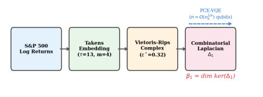
<figcaption class="paper-figure-caption"><b>Fig 1.</b> Fig. 1. Overview of the qTDA pipeline with PCE qubit compression: (1) S&amp;P 500 log returns →Takens embedding (τ = 13, m = 4) →point cloud in R4; (2) Vietoris–Rips complex VR(ε∗), 461 points per window; (3) combinatorial Laplacian ∆1 = ∂2∂⊤ 2 + ∂⊤ 1 ∂1, nk ∈[31, 429]; (4) PCE encoding into n = O(n1/κ k ) qubits, HEA + COBYLA optimisation with variational deflation →˜β1.</figcaption>
</figure>
<figure class="paper-figure-card">
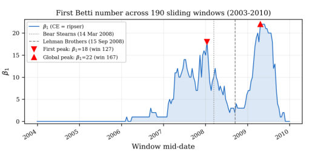
<figcaption class="paper-figure-caption"><b>Fig 2.</b> Fig. 2. First Betti number β1 over 190 sliding windows (2003–2010), computed by the classical CE benchmark and verified against ripser. Vertical lines mark Bear Stearns (14 Mar. 2008, dotted) and Lehman Brothers (15 Sep. 2008, dashed). β1 ∈[0, 22]; mean 4.72.</figcaption>
</figure>
<figure class="paper-figure-card">

<figcaption class="paper-figure-caption"><b>Fig 3.</b> Fig. 2. CE agrees with ripser on 190/190 windows (100%) for both β0 and β1, confirming that the classical stage of the pipeline is correct. The β1 signal rises from zero in late 2006, reaches a first peak at window 127 (β1 = 18, January 2007 to January 2009), dips briefly, and then attains the global maximum β1 = 22 at window 167 (April 2008 to April 2010). The topological complexity begins building more than a year before the Bear Stearns collapse (March 2008) and Lehman Brothers bankruptcy (September 2008), consistent with the hypothesis that topological loop formation provides a leading indicator of systemic stress [3]. We emphasize that the curves in this section are produced by the...</figcaption>
</figure>
<figure class="paper-figure-card">
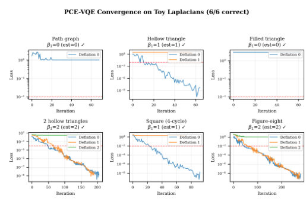
<figcaption class="paper-figure-caption"><b>Fig 4.</b> Fig. 3. PCE-VQE convergence on six toy Laplacians (6/6 correct). Each panel is one toy Laplacian, labelled with its true β1 and the recovered estimate. Within a panel, each coloured curve is one deflation round (round 0 blue, round 1 orange, round 2 green), that is, one search for a null vector orthogonal to those already found; the red dashed line is the null-space threshold δ = 0.01. A curve settling near 10−10 has located a null vector, while a round whose best loss jumps to ≈3.0 has none left to find and terminates the count. Each panel carries its own legend listing the deflation rounds it contains.</figcaption>
</figure>
<figure class="paper-figure-card">
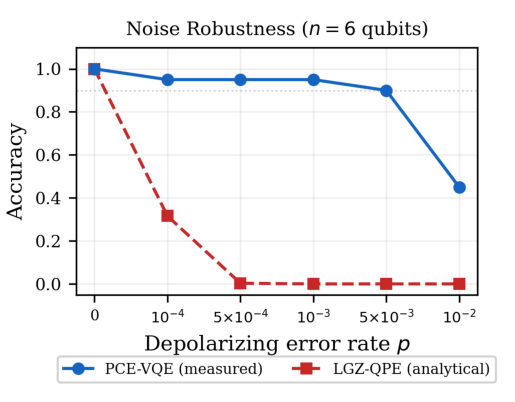
<figcaption class="paper-figure-caption"><b>Fig 5.</b> Fig. 4. Noise robustness (illustrative; not a matched-scale comparison): PCE- VQE accuracy (measured, blue, n = 6 qubits, nk ≈63 under κ = 2) vs. LGZ-QPE at nk = 16 (measured, red solid) and analytical extrapolation (red dashed). PCE maintains &gt;90% accuracy up to p=5×10−3; simulated LGZ-QPE collapses above p=10−4, matching the analytical bound. The two curves are not at matched encoded problem size: PCE encodes nk ≈63 basis dimensions while LGZ operates on nk = 16. The figure illustrates the depth/noise trade-off at moderate scale rather than a like-for-like comparison; see Section VII-F for explicit caveats.</figcaption>
</figure>
</div>
<p><strong>Summary.</strong> The paper proposes using Quantum Topological Data Analysis (qTDA) via Pauli Correlation Encoding (PCE) to detect financial stress by estimating topological features ($eta_k$) from stock market returns. It demonstrates that PCE offers a shallow and robust quantum approach compared to other methods for this task. While promising, the authors note that achieving full generalization across different economic crises remains an open challenge.</p>
<p><strong>Why it may be interesting.</strong> This work is highly relevant as it merges advanced quantum computation techniques (PCE) with complex data analysis problems (TDA), providing a blueprint for applying near-term quantum hardware to high-dimensional, structured scientific data beyond simple Hamiltonian simulation.</p>
<details>
<summary>Detailed structure</summary>
<p><strong>Main problem.</strong> The core problem is developing a depth-efficient quantum algorithm to estimate Betti numbers ($eta_k$) from complex financial time series data, which classically requires computationally expensive diagonalization of large combinatorial Laplacians.</p>
<p><strong>Main result.</strong> The authors successfully adapted Pauli Correlation Encoding (PCE) for this task, showing that while the method achieves shallow circuits and polynomial gradient decay, its current implementation relies on a classical warm-start to recover topological invariants exactly.</p>
<p><strong>Method.</strong> They reformulate Betti number estimation as a continuous-PCE Rayleigh-quotient minimization. This variational quantum circuit approach encodes necessary combinatorial data into qubits using Pauli correlators, bypassing the deep circuits required by standard Quantum Phase Estimation (QPE).</p>
<p><strong>Model / system.</strong> The system is derived from S&amp;P 500 returns time series, processed via Takens embedding and Vietoris–Rips filtration to construct a point cloud whose topology is characterized by Betti numbers ($eta_k$). The quantum computation operates on the parameters defining these topological invariants.</p>
<p><strong>Key observables.</strong> Betti numbers ($eta_1$ in particular), ROC AUC scores for classification, and gradient variance decay rates.</p>
<p><strong>Important parameters / regimes.</strong> Number of qubits ($n$), correlation order ($\kappa$), noise parameter ($p$), and time-series window size (e.g., 2007-2009).</p>
<p><strong>Assumptions / limitations.</strong> The primary limitation is that the quantum recovery of $eta_1$ requires warm-starting from a classical null-space surrogate, suggesting the bottleneck lies in the optimization landscape rather than the encoding itself.</p>
<p><strong>Figures summary.</strong> Figures compare PCE-VQE against LGZ-QPE regarding circuit depth and noise robustness, showing PCE's advantage for near-term devices. Classification results show $eta_1$ outperforms baseline proxies during specific historical periods but fails to generalize across distinct crisis regimes (e.g., COVID shock).</p>
<p><strong>Paper structure.</strong> The paper first establishes the need for quantum TDA due to classical computational bottlenecks in calculating Betti numbers from market data. It then details the novel adaptation of PCE for this purpose, comparing it favorably against QPE methods based on circuit depth and noise resilience. Finally, it presents empirical results showing successful recovery under warm-start conditions but highlights limitations regarding generalization across different economic regimes.</p>
</details>
<details>
<summary>Abstract</summary>
<p>We present, to our knowledge, the first adaptation of Pauli Correlation Encoding (PCE) to quantum topological data analysis, reformulating Betti number estimation as a depth-efficient variational optimization over a compressed qubit register. From a Takens embedding and Vietoris--Rips filtration of S&amp;P~500 returns, we extract combinatorial Laplacians and recast null-space counting as a continuous-PCE Rayleigh-quotient minimization with variational deflation, encoding $n_k$ simplex indices into $O(n_k^{1/κ})$ qubits with shallow, ancilla-free circuits. Because the resulting loss is rational rather than bilinear in the correlators, the barren-plateau bound of~\cite{Sciorilli25} does not transfer; empirically the gradient variance decays only polynomially, with no exponential barren plateau, over $n=4$--$12$ qubits. The classical stage matches ripser~\cite{bauer2021ripser} on all 190 sliding windows (2007-2009). On the real market Laplacians ($β_1=1$--$22$), warm-starting from a classical null-space surrogate allows PCE-VQE to recover $β_1$ exactly at every scale, placing the obstacle in the optimisation landscape rather than the encoding. Chronologically split classification gives in-regime ROC AUC $0.818$, but out-of-distribution evaluation on the 2020 COVID shock and 2022 rate cycle (AUC $0.009$, $0.515$) shows the calibration does not generalize across crisis regimes.</p>
</details>
<p><sub><a href="#top">↑ back to top</a></sub></p>

<p><a id="paper-2607.11401"></a></p>
<h3 id="from-leaves-to-clusters-depth-efficient-sat-oracle-synthesis-based-on-the-hrse-model"><a href="http://arxiv.org/abs/2607.11401v1">From Leaves to Clusters: Depth-Efficient SAT-Oracle Synthesis Based on the HRSE Model</a></h3>
<p><strong>Authors:</strong> Zhihang Li, Wei Zi, Shuai Yang, Bei Zhou, Zongjiang Yi, Woji He, Yingjie Lin, Kaixiang Ji, Heru Du, Jinchen Xu<br>
<strong>Type:</strong> theory · <strong>Category:</strong> quantum information and computing · <strong>PDF:</strong> <a href="https://arxiv.org/pdf/2607.11401v1">https://arxiv.org/pdf/2607.11401v1</a><br>
<strong>Analysis basis:</strong> full PDF text, analyzed in chunks</p>
<div class="figure-strip-hint">↔ Scroll figures horizontally</div>
<div class="paper-figures-scroll">
<figure class="paper-figure-card">
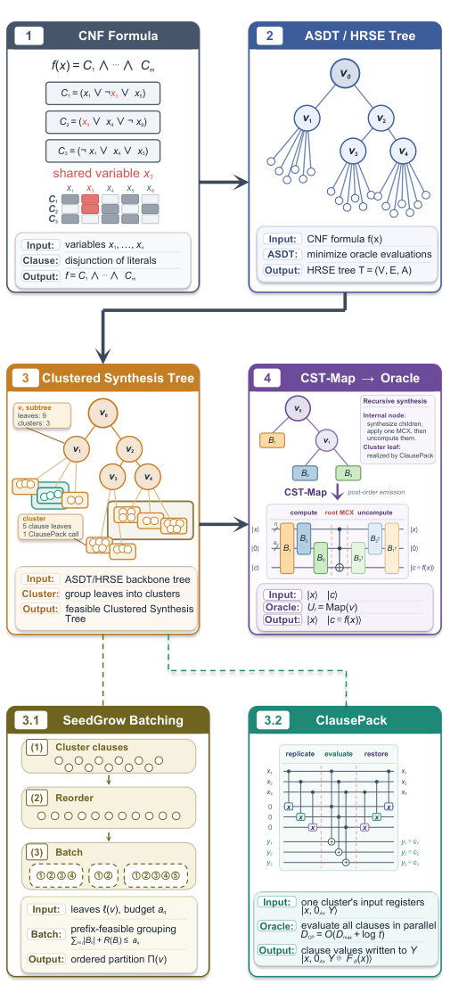
<figcaption class="paper-figure-caption"><b>Fig 1.</b> Fig. 1. The CST-based SAT-oracle synthesis pipeline. A CNF instance is processed through four stages—ASDT backbone construction under the ancilla budget aq, clause clustering into feasible ordered partitions, per-leaf ClausePack evaluation, and CST-Map compilation—yielding an executable SAT-oracle.</figcaption>
</figure>
<figure class="paper-figure-card">
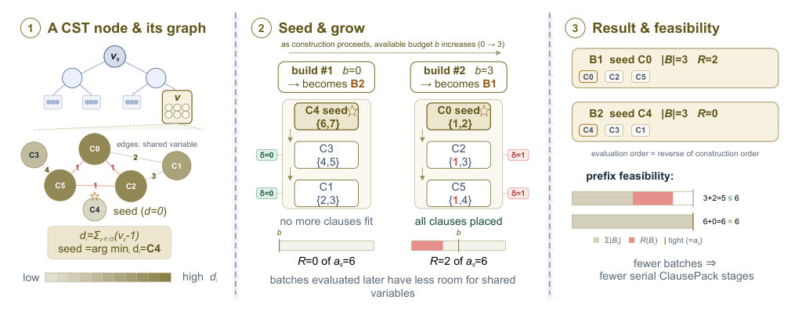
<figcaption class="paper-figure-caption"><b>Fig 2.</b> Fig. 2. Worked example of SEEDGROW on the instance f = (x1∨x2) ∧(x2∨x3) ∧(x1∨x3) ∧(x4∨x5) ∧(x6∨x7) ∧(x1∨x4) (m = 6, aq = 6; clauses are indexed from C0 in this worked example). Left: Conflict graph; nodes shaded by the conflict degree di defined in (20); x1 is the shared “hot” variable linking C0, C2, C5; the seed (⋆) is the least-conflicting clause. Center: Backward batch construction (last batch built first); within budget b, each step admits the candidate of smallest overlap increment δi = | bCi ∩U|, as defined in (21); the budget b increases as clauses are committed to later batches. Right: Final partition in evaluation order B1 = {C0, C2, C5} (R = 2) and B2 = {C1, C3, C4} (R = 0), with...</figcaption>
</figure>
<figure class="paper-figure-card">
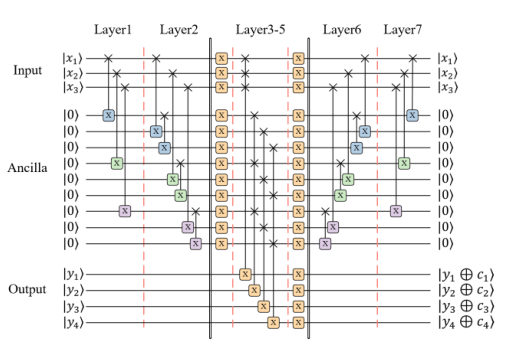
<figcaption class="paper-figure-caption"><b>Fig 3.</b> Fig. 3. ClausePack oracle for one clustered leaf, instantiated on a maximally shared cluster of four identical clauses C1 = · · · = C4 = (x1 ∨x2 ∨x3).</figcaption>
</figure>
<figure class="paper-figure-card">
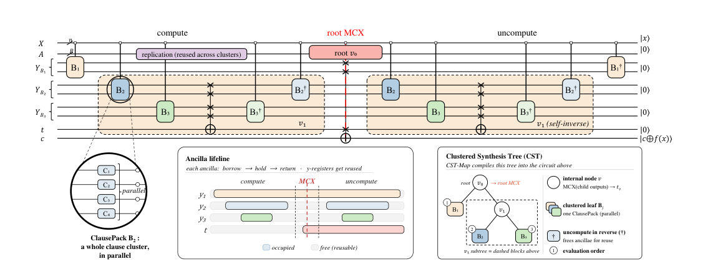
<figcaption class="paper-figure-caption"><b>Fig 4.</b> Fig. 4. Circuit-level illustration of CST-Map. Clustered leaves Bj are compiled into CLAUSEPACKBj blocks that evaluate clause clusters in parallel; internal CST nodes collect the exposed child outputs, apply an MCX gate to write the node value, and then uncompute the child blocks in reverse order so that temporary ancillae can be reused.</figcaption>
</figure>
<figure class="paper-figure-card">
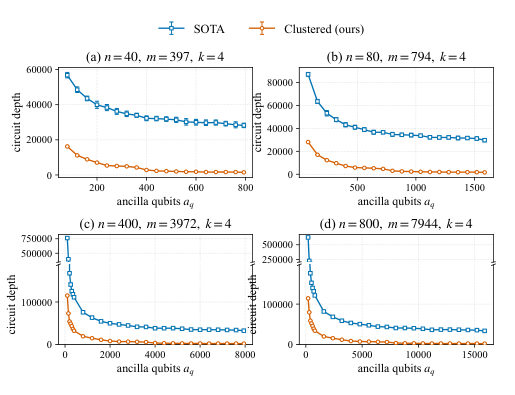
<figcaption class="paper-figure-caption"><b>Fig 5.</b> Fig. 5. End-to-end circuit depth as a function of the ancilla budget aq, on four random 4-CNF size classes (n = 40, 80, 400, 800; one subplot each). Both methods are evaluated on the same instances at the same sampled budget values. Markers denote the mean over 20 instances, and error bars denote one standard deviation computed from the per-instance depth records.</figcaption>
</figure>
</div>
<p><strong>Summary.</strong> This paper presents the Clustered Synthesis Tree (CST), a novel framework designed to build deep-circuit quantum oracles for solving SAT problems efficiently. By grouping related clauses into parallel clusters, CST significantly outperforms existing state-of-the-art methods across multiple benchmarks. The results demonstrate massive reductions in circuit depth, proving its utility for resource-constrained quantum computation.</p>
<p><strong>Why it may be interesting.</strong> While focused on SAT, the methodology of optimizing circuit depth under resource constraints via structural decomposition (clustering) is highly relevant to designing efficient quantum circuits for complex physical simulations or algorithms in general.</p>
<details>
<summary>Detailed structure</summary>
<p><strong>Main problem.</strong> The core challenge is synthesizing quantum oracles for SAT (CNF) formulas with minimal circuit depth while operating under strict constraints on available ancilla qubits.</p>
<p><strong>Main result.</strong> The proposed Clustered Synthesis Tree (CST) framework achieves dramatic reductions in oracle circuit depth, showing speedups of up to 43.2x over state-of-the-art methods on standard benchmarks.</p>
<p><strong>Method.</strong> It introduces CST, a depth-oriented synthesis tree that groups individual clause leaves into clusters to expose instance-dependent parallelism, which is then compiled using the ClausePack oracle and SeedGrow heuristic.</p>
<p><strong>Model / system.</strong> The work models quantum oracles for SAT problems, utilizing the Hierarchical Recursive Synthesis-Evaluation (HRSE) framework as a structural backbone. The system involves mapping the CNF formula onto a computation tree structure constrained by qubit availability.</p>
<p><strong>Key observables.</strong> Circuit Depth ($D(\cdot)$), Ancilla Qubit Budget ($a_q$), and the resulting speedup ratio compared to baseline methods.</p>
<p><strong>Important parameters / regimes.</strong> The number of variables ($n$), clauses ($m$), clause width ($k$, e.g., 3-CNF, 4-CNF), and the available ancilla qubits.</p>
<p><strong>Assumptions / limitations.</strong> The primary assumption is that depth reduction can be achieved by exploiting clause-level parallelism through intelligent clustering, which leads to an NP-complete scheduling problem (ACCS-D).</p>
<p><strong>Figures summary.</strong> Figures compare CST's circuit depth against SOTA baselines across various instance sizes and budgets; Table VI quantifies resource estimates for solving k-SAT using Grover's search algorithm.</p>
<p><strong>Paper structure.</strong> The paper first establishes the limitations of existing methods, then introduces the CST framework which refines the HRSE/ASDT backbone. It details the three components—SeedGrow (grouping), ClausePack (parallel evaluation), and CST-Map (compilation)—before presenting extensive benchmarking results.</p>
</details>
<details>
<summary>Abstract</summary>
<p>Quantum oracles are a common building block of many quantum algorithms, where circuit depth is a primary cost that directly affects overall performance. Synthesizing oracles for SAT (CNF) formulas under a limited ancilla budget, however, tends to yield deep circuits, as existing methods underexploit clause-level parallelism. In this work, we present the Clustered Synthesis Tree (CST), a depth-oriented framework whose core idea is to group the individual clause leaves of a hierarchical synthesis tree into clusters, exposing instance-dependent clause-level parallelism under ancilla constraints. CST comprises three parts: the clause-grouping problem it induces, which we formulate as an ancilla-constrained scheduling problem and prove NP-complete in general, is addressed by SeedGrow, a polynomial-time $O(m^2 k)$ heuristic; ClausePack, a reversible oracle that evaluates a cluster's clauses in parallel at only a logarithmic-depth overhead; and CST-Map, which compiles the clustered tree into an executable SAT-oracle. On random $4$-CNF under the same ancilla budgets, CST reduces the oracle's circuit depth over the state-of-the-art (SOTA) baseline by $68\%$--$94\%$. On the standard SATLIB benchmarks, CST achieves about a $2.6\times$--$43.2\times$ reduction over the SOTA baseline, with the largest gains under dense variable sharing, and matches the baseline's maximum-budget depth using only $3.7\%$--$20\%$ of its ancilla qubits. A Grover-search resource estimate shows the advantage carries over to the full algorithm, reducing total circuit depth by $70\%$--$89\%$.</p>
</details>
<p><sub><a href="#top">↑ back to top</a></sub></p>

<p><a id="paper-2607.10262"></a></p>
<h3 id="hsf-s-speed-optimized-compilation-and-acceleration-for-hybrid-schrodinger-feynman-quantum-circuit-emulation"><a href="http://arxiv.org/abs/2607.10262v1">HSF-S: Speed-Optimized Compilation and Acceleration for Hybrid Schrodinger-Feynman Quantum Circuit Emulation</a></h3>
<p><strong>Authors:</strong> Sechan Park, Kyeongwon Lee, Mundo Jeong, Chaebin Jung, Woojoo Lee<br>
<strong>Type:</strong> both · <strong>Category:</strong> quantum information and computing · <strong>PDF:</strong> <a href="https://arxiv.org/pdf/2607.10262v1">https://arxiv.org/pdf/2607.10262v1</a><br>
<strong>Analysis basis:</strong> full PDF text, analyzed in chunks</p>
<div class="figure-strip-hint">↔ Scroll figures horizontally</div>
<div class="paper-figures-scroll">
<figure class="paper-figure-card">
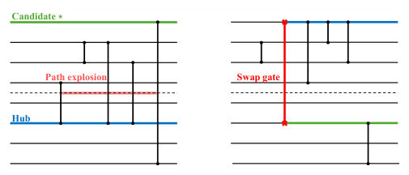
<figcaption class="paper-figure-caption"><b>Fig 1.</b> Figure 1: Key intuition of HSF-S. Under a fixed partition, a hub qubit repeatedly induces cross-boundary interactions. A cross SWAP can relocate the hub and convert downstream cross-boundary interac- tions into intra-slice gates, reducing HSF path cost.</figcaption>
</figure>
<figure class="paper-figure-card">
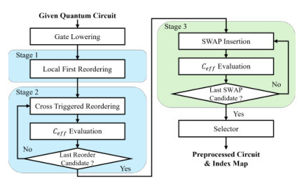
<figcaption class="paper-figure-caption"><b>Fig 2.</b> Figure 2: Overview of the HSF-S preprocessing flow. After gate low- ering, two reordering stages expose profitable SWAP opportunities, Stage 3 inserts cross SWAPs, and the Selector returns the best com- piled circuit together with metadata.</figcaption>
</figure>
<figure class="paper-figure-card">
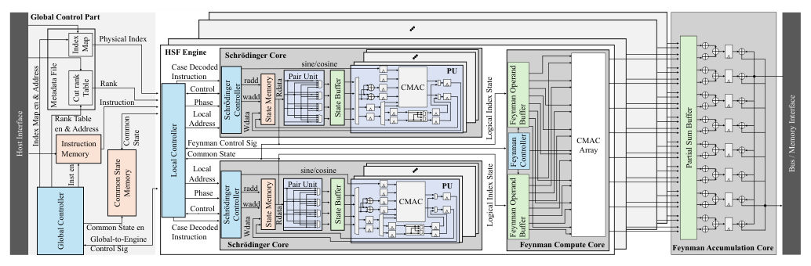
<figcaption class="paper-figure-caption"><b>Fig 3.</b> Figure 3: Overview of the proposed HSF-S accelerator. The host loads the compiled instruction stream together with cut-rank table and index map. A global controller broadcasts instructions to parallel HSF engines. Each engine contains two slice-local Schrödinger cores and a Feynman Compute Core, while a common-state memory and a shared Feynman Accumulation Core support prefix reuse and cross-path accumulation.</figcaption>
</figure>
<figure class="paper-figure-card">
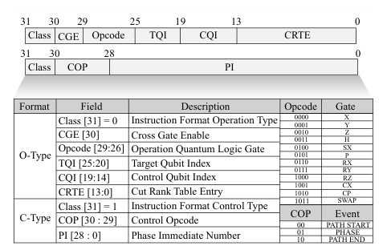
<figcaption class="paper-figure-caption"><b>Fig 4.</b> Figure 4: Instruction format of the proposed HSF-S accelerator.</figcaption>
</figure>
<figure class="paper-figure-card">
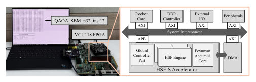
<figcaption class="paper-figure-caption"><b>Fig 5.</b> Figure 5: Prototype demonstration of the stand-alone HSF-S QC emulator on the AMD VCU118 FPGA evaluation board.</figcaption>
</figure>
</div>
<p><strong>Summary.</strong> The paper introduces HSF-S, a novel compiler and accelerator framework designed to efficiently emulate quantum circuits using the Hybrid Schrödinger-Feynman (HSF) method. It minimizes runtime bottlenecks by optimizing circuit structure via path-cost modeling and reordering, and further accelerates execution using a custom FPGA-based processor. This significantly improves the practical tractability of exact HSF simulation.</p>
<p><strong>Why it may be interesting.</strong> This work directly addresses the computational bottlenecks in simulating complex quantum circuits by developing specialized compiler optimizations and custom hardware accelerators tailored to the path-centric nature of HSF simulation, which is crucial for scaling quantum algorithm testing.</p>
<details>
<summary>Detailed structure</summary>
<p><strong>Main problem.</strong> The practical runtime of Hybrid Schrödinger-Feynman (HSF) quantum circuit emulation is limited by exponential path growth from cross-boundary two-qubit gates, which existing simulators do not handle efficiently.</p>
<p><strong>Main result.</strong> The proposed HSF-S framework reduces the effective path cost by up to 90.0% and provides a dedicated hardware accelerator yielding up to 4.34x speedup on compiled workloads.</p>
<p><strong>Method.</strong> HSF-S is a compiler-accelerator co-designed framework that lowers circuits to an HSF basis, applies dependency-preserving reordering, and uses discounted-gain SWAP insertion based on a rank-aware effective path-cost model.</p>
<p><strong>Model / system.</strong> The paper focuses on exact quantum circuit emulation using the Hybrid Schrödinger-Feynman (HSF) model, which partitions computation into local (Schrödinger) and cross-boundary (Feynman) evaluations. The implementation is prototyped on a stand-alone RISC-V core integrated onto an AMD VCU118 FPGA.</p>
<p><strong>Key observables.</strong> Effective path cost ($C_{eff}$), amplitude matching to reference values, and hardware speedup factor.</p>
<p><strong>Important parameters / regimes.</strong> Cross-boundary gate types (e.g., controlled gates $
ightarrow$ rank 2, SWAP $
ightarrow$ rank 4); the fixed bipartition of qubits into slices A or B.</p>
<p><strong>Assumptions / limitations.</strong> The effective path cost ($C_{eff}$) is a compile-time surrogate for runtime; the process assumes an exact emulation requirement that must be preserved during optimization.</p>
<p><strong>Figures summary.</strong> Figures illustrate the HSF-S preprocessing flow, showing how reordering and SWAP insertion reduce $C_{eff}$ compared to naive lowering, alongside hardware prototype diagrams and ablation studies on cost reduction across pipeline stages.</p>
<p><strong>Paper structure.</strong> The paper introduces the problem of path growth in HSF simulation, details the multi-stage HSF-S compilation pipeline (lowering $
ightarrow$ reordering $
ightarrow$ SWAP insertion $
ightarrow$ Selector), presents the dedicated hardware accelerator design, and validates the combined approach on benchmarks.</p>
</details>
<details>
<summary>Abstract</summary>
<p>Hybrid Schrodinger-Feynman (HSF) simulation offers an attractive memory-path tradeoff for exact quantum-circuit emulation, but its practical runtime is often dominated by exponential path growth from cross-boundary two-qubit gates. Existing GPU and FPGA quantum simulators are largely optimized for full-state Schrodinger execution and therefore do not align well with HSF's path-centric workflow. This paper presents HSF-S, a compiler-accelerator co-designed framework for exact HSF-based quantum circuit emulation. HSF-S lowers input circuits to an HSF-compatible basis, formulates a rank-aware effective path-cost model, and applies dependency-preserving reordering together with discounted-gain SWAP insertion to suppress recurring cross-boundary interactions while preserving exact circuit semantics. A regression-free selector guarantees that the compiled circuit never increases effective path cost relative to the naive lowered baseline. We further design a dedicated HSF-S accelerator and execution flow, and integrate them into a stand-alone processor for efficient per-path dual-slice evaluation and final accumulation without materializing the full state vector. Across 56 benchmark circuits, HSF-S matches reference amplitudes to within floating-point precision, reduces effective path cost by up to 90.0%, and substantially improves practical tractability, including representative timeout-to-sub-second reductions under a 1-hour budget. On the resulting compiled workloads, the HSF-S processor prototype delivers up to 4.34x additional speedup.</p>
</details>
<p><sub><a href="#top">↑ back to top</a></sub></p>

<p><a id="paper-2607.11843"></a></p>
<h3 id="input-aware-dynamic-backdoor-attack-against-quantum-neural-networks"><a href="http://arxiv.org/abs/2607.11843v1">Input-Aware Dynamic Backdoor Attack Against Quantum Neural Networks</a></h3>
<p><strong>Authors:</strong> Junrui Zhang, Zemin Chen, Lusi Li, Mohammad Ghasemigol, Daniel Takabi, Rui Ning<br>
<strong>Type:</strong> theory · <strong>Category:</strong> quantum information and computing · <strong>PDF:</strong> <a href="https://arxiv.org/pdf/2607.11843v1">https://arxiv.org/pdf/2607.11843v1</a><br>
<strong>Analysis basis:</strong> full PDF text, analyzed in chunks</p>
<div class="figure-strip-hint">↔ Scroll figures horizontally</div>
<div class="paper-figures-scroll">
<figure class="paper-figure-card">
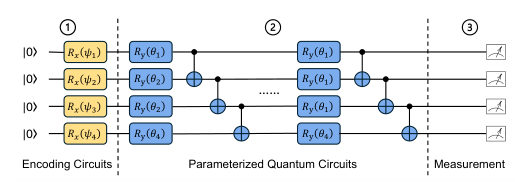
<figcaption class="paper-figure-caption"><b>Fig 1.</b> Fig. 1: Overview of a QNN, consisting of encoding circuits that map classical data into a quantum state, parameterized quantum circuits with trainable gates, and measurement layer that returns classical predictions.</figcaption>
</figure>
<figure class="paper-figure-card">
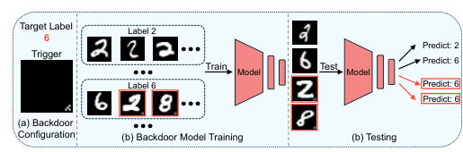
<figcaption class="paper-figure-caption"><b>Fig 2.</b> Fig. 3: An illustration of a backdoor attack. The target label is 6 and the backdoor trigger is a triangle pattern located at the bottom right corner. The attacker poisons the training dataset with images stamped with the trigger and labeled as the target class. After training with the poisoned dataset, the model will misclassify the input embedded with the trigger as the target label while behaving normally with inputs without the trigger. Extending Backdoor Attacks to QNNs. Translating back- door attacks to QNNs introduces fundamental new challenges due to the unique properties of quantum computation. Early attempts have explored two main attack strategies: (1) Circuit- level manipulation...</figcaption>
</figure>
<figure class="paper-figure-card">
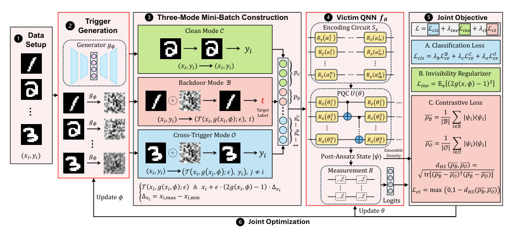
<figcaption class="paper-figure-caption"><b>Fig 3.</b> Fig. 4: Overview of the Q-DIBA framework. Given (1) a clean subset, Q-DIBA uses (2) the generator gϕ to produce input- aware triggers, which are injected by (3) the range-matched transformation T to construct clean, backdoor, and cross-trigger mini-batch modes. The resulting samples are processed by (4) the victim QNN fθ through encoding Sx, PQC U(θ), and measurement R, producing post-ansatz states and logits. These outputs are used in (5) a joint objective combining Lcls, Linv, and Lct, through which (6) fθ and gϕ are jointly optimized.</figcaption>
</figure>
</div>
<p><strong>Summary.</strong> This paper introduces Q-DIBA, the first input-aware dynamic backdoor attack specifically designed for Quantum Neural Networks (QNNs). It overcomes major theoretical hurdles in quantum machine learning—namely measurement collapse and state fluctuation—by using an ensemble density contrastive loss. The resulting attack is highly successful, stealthy, and resilient against several known defense mechanisms.</p>
<p><strong>Why it may be interesting.</strong> The work directly addresses security vulnerabilities in quantum machine learning architectures by proposing a sophisticated, input-specific attack that circumvents common detection mechanisms based on fixed patterns or simple spectral analysis.</p>
<details>
<summary>Detailed structure</summary>
<p><strong>Main problem.</strong> Quantum Neural Networks (QNNs) are vulnerable to backdoor attacks, and existing quantum backdoors use fixed triggers which are easily detectable by modern defenses.</p>
<p><strong>Main result.</strong> The proposed Q-DIBA achieves high attack success rates while remaining stealthy against visual inspection, spectral signature detection, and fine-tuning, establishing a new threat model for secure QNN deployment.</p>
<p><strong>Method.</strong> Q-DIBA jointly trains the QNN and an input-aware trigger generator using a three-mode mini-batch strategy and introduces an ensemble density contrastive loss operating on post-ansatz quantum states before measurement.</p>
<p><strong>Model / system.</strong> The system is a Quantum Neural Network (QNN), which is a hybrid quantum-classical model composed of an encoding circuit, parameterized quantum circuits (PQCs), and a final measurement layer. The attack targets the parameters ($ heta$) governing these trainable unitary operations.</p>
<p><strong>Key observables.</strong> Clean Model Accuracy (CA), Attack Success Rate (ASR), Cross-Trigger Accuracy (CTA), and performance after fine-tuning epochs.</p>
<p><strong>Important parameters / regimes.</strong> The three training modes: clean samples, attack activation samples, and cross-trigger samples; the contrastive loss hinge distance ($d_{	ext{HS}}$).</p>
<p><strong>Assumptions / limitations.</strong> It is assumed that averaging the density matrices ($ar{
ho}$) across samples within a mode provides a stable gradient for training the joint optimization.</p>
<p><strong>Figures summary.</strong> Figures illustrate the QNN structure (Encoding $
ightarrow$ PQC $
ightarrow$ Measurement) and show examples of fixed-trigger attacks. Tables summarize performance metrics like ASR, CTA, and resilience against fine-tuning across different epochs.</p>
<p><strong>Paper structure.</strong> The paper first reviews QNNs and backdoor vulnerabilities, identifies the limitations of current quantum attack models (measurement collapse), proposes Q-DIBA with its novel loss function, validates it on MNIST/Fashion-MNIST, and finally demonstrates its robustness against state-of-the-art defenses.</p>
</details>
<details>
<summary>Abstract</summary>
<p>Quantum Neural Networks (QNNs) are a promising framework for quantum machine learning on near-term quantum devices, but their security risks remain insufficiently understood. Studies have shown that QNNs are vulnerable to backdoor attacks, yet existing quantum backdoors mostly rely on a fixed trigger shared by all poisoned inputs. This fixed-trigger design is a major weakness because many defenses detect or weaken the repeated patterns such triggers leave in data representations. Although input-aware dynamic backdoors have been studied in classical neural networks, transferring them to QNNs is difficult because quantum learning introduces new obstacles. In particular, measurement compresses the post-ansatz quantum state into a limited classical output, weakening supervision for a trigger generator, while individual density matrices fluctuate with the input and make per-sample contrastive learning unstable. To address these challenges, we propose Q-DIBA, the first input-aware dynamic backdoor attack for QNNs. Q-DIBA jointly trains a classical trigger generator and a victim QNN through a three-mode mini-batch strategy that supports clean behavior, attack activation, and trigger specificity. To provide stable quantum-level supervision, Q-DIBA introduces an ensemble density contrastive loss that operates on post-ansatz quantum states before measurement and contrasts mode-averaged density matrices rather than individual samples. Experiments on MNIST and Fashion-MNIST across multiple QNN architectures show that Q-DIBA achieves high clean accuracy, strong attack success, and high cross-trigger accuracy, demonstrating effectiveness, stealthiness, and input specificity. The attack also remains resilient against defenses including visual inspection, spectral-signature detection, and fine-tuning, suggesting that input-aware quantum backdoors are an important threat to secure QNN deployment.</p>
</details>
<p><sub><a href="#top">↑ back to top</a></sub></p>

<p><a id="paper-2607.11174"></a></p>
<h3 id="lie-algebraic-subspace-quantization-for-zero-shot-quantum-learning-and-barren-plateau-mitigation"><a href="http://arxiv.org/abs/2607.11174v1">Lie-Algebraic Subspace Quantization for Zero-Shot Quantum Learning and Barren-Plateau Mitigation</a></h3>
<p><strong>Authors:</strong> Yuhan Yao, Yoshihiko Hasegawa<br>
<strong>Type:</strong> theory · <strong>Category:</strong> quantum information and computing · <strong>PDF:</strong> <a href="https://arxiv.org/pdf/2607.11174v1">https://arxiv.org/pdf/2607.11174v1</a><br>
<strong>Analysis basis:</strong> full PDF text, analyzed in chunks</p>
<div class="figure-strip-hint">↔ Scroll figures horizontally</div>
<div class="paper-figures-scroll">
<figure class="paper-figure-card">
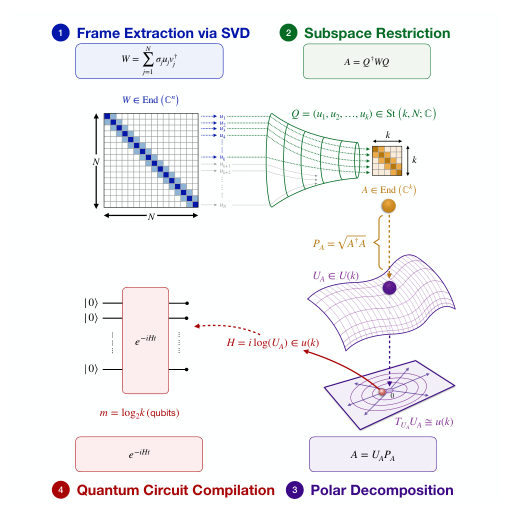
<figcaption class="paper-figure-caption"><b>Fig 1.</b> FIG. 1. Algebraic architecture and geometric projec- tion mechanics of the quantum parameter transfer map T (Theorem 3). The conceptual workflow trans- lates an arbitrary, non-unitary classical prior into a physi- cally realizable subspace quantum evolution via four explicit algebraic operations: (1) Spectral Decoupling: The am- bient operator W ∈End(CN) is transformed via singular value decomposition (SVD) to isolate the dominant dynam- ical sectors characterized by the leading k left singular vec- tors. (2) Isometric Compression: The isometric frame Q ∈St(k, N; C) restricts the ambient interactions onto a k- dimensional computational core, yielding the localized effec- tive operator A....</figcaption>
</figure>
<figure class="paper-figure-card">
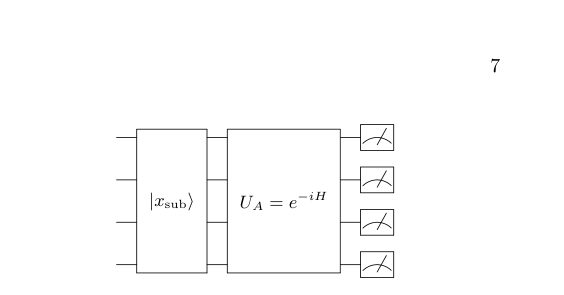
<figcaption class="paper-figure-caption"><b>Fig 2.</b> FIG. 2. Zero-shot quantum compilation on four qubits. The analytical map T translates a 64 × 64 full-rank classical weight W into an isometric frame Q ∈St(16, 64; C) and a local Hermitian generator H ∈i u(16); the compiled circuit prepares the subspace state |xsub⟩= Q†x and applies the single subspace unitary UA = e−iH on log2 16 = 4 qubits. The classical model (4096 parameters) reaches 94.4% accu- racy; the zero-shot 4-qubit hybrid operator recovers 93.4% (1.0% gap), and reproduces the physical circuit to machine precision.</figcaption>
</figure>
<figure class="paper-figure-card">
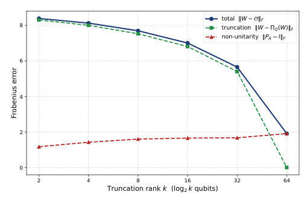
<figcaption class="paper-figure-caption"><b>Fig 3.</b> FIG. 3. Quantization error budget versus subspace dimension k. The total Frobenius error (blue) is bounded by the sum of the truncation term (green) and the non-unitarity term (red), as in Theorem 4. Truncation →0 as k →N; the non-unitarity term is the irreducible floor ∥PA −Ik∥F = qP</figcaption>
</figure>
<figure class="paper-figure-card">
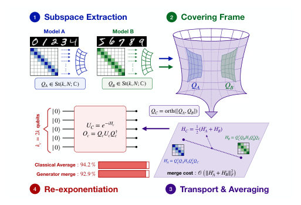
<figcaption class="paper-figure-caption"><b>Fig 4.</b> FIG. 4. Covering-frame generator-space merging. Two specialized frame-generator pairs are embedded into the cov- ering frame QC = orth([QA, QB]). The transported genera- tors are preserved exactly before being averaged in the com- mon Lie algebra and re-exponentiated as the merged quantum operator. The additional merge discrepancy is second order in the transported-generator separation.</figcaption>
</figure>
<figure class="paper-figure-card">
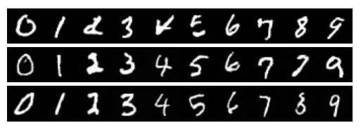
<figcaption class="paper-figure-caption"><b>Fig 5.</b> FIG. 6. Experiment II: quantum diffusion trans- former. Class-conditional MNIST samples for digits 0–9. Top: classical Mini-DiT (Phase 1). Middle: zero-shot quan- tum transfer of all residual cores to 4-qubit hybrid opera- tors, no quantum-side training (Phase 2). Bottom: after fine- tuning the Hermitian generators only (Phase 3).</figcaption>
</figure>
</div>
<p><strong>Summary.</strong> This paper presents an analytical framework to overcome barren plateaus in Quantum Neural Networks by mapping classical weights onto low-dimensional subspaces of the quantum evolution. It introduces a parameter transfer map and rigorously proves that gradient variance scales favorably with this subspace dimension ($k$), enabling scalable, trainable quantum models.</p>
<p><strong>Why it may be interesting.</strong> This work provides deep theoretical guarantees on the scalability of quantum machine learning models by mathematically controlling how classical information is encoded into quantum dynamics, which is crucial for designing practical quantum algorithms.</p>
<details>
<summary>Detailed structure</summary>
<p><strong>Main problem.</strong> The primary challenge addressed is overcoming the barren plateau phenomenon that severely limits the scalability of variational quantum circuits.</p>
<p><strong>Main result.</strong> The authors introduce an analytical parameter transfer map that converts classical network weights into low-dimensional, subspace-confined quantum evolutions while providing rigorous error bounds for model merging and gradient analysis.</p>
<p><strong>Method.</strong> The core method involves mapping classical parameters to Lie algebra generators via Stiefel subspace selection and nearest-unitary polar projection, allowing the dynamics to be confined to a controllable $k$-dimensional subspace.</p>
<p><strong>Model / system.</strong> The system analyzed is Parameterized Quantum Circuits (PQCs) or Quantum Neural Networks (QNNs). The underlying mathematical framework utilizes Lie algebra theory applied to quantum evolution operators defined on Hilbert spaces $\mathcal{H}_N$.</p>
<p><strong>Key observables.</strong> Hellinger fidelity (0.987 at k=8), subspace gradient resolvability (up to 128 qubits), and the effective dimension ($D_N$) derived from the normalized Fisher information matrix.</p>
<p><strong>Important parameters / regimes.</strong> The low-dimensional subspace size $k$, the ambient qubit number $N$ (or $n$), and the circuit depth $L$.</p>
<p><strong>Assumptions / limitations.</strong> Assumes that restricting dynamics to a low-dimensional subspace geometry built from Stiefel frames is sufficient, and relies on defining a branch-cut-free neighborhood around the identity for the principal logarithm.</p>
<p><strong>Figures summary.</strong> Not specified by notes; however, the analysis involves derivations related to gradient variance scaling ($\propto 1/k$) and the saturation of effective dimension based on Fisher spectra.</p>
<p><strong>Paper structure.</strong> The paper builds from foundational mathematical tools (Stiefel manifolds, Lie algebra) to develop a parameter transfer map. It then analyzes trainability by bounding gradient variance in low-dimensional subspaces, followed by extensions to model merging and quantifying circuit expressivity via the effective dimension.</p>
</details>
<details>
<summary>Abstract</summary>
<p>The barren plateau phenomenon severely limits the scalability of parameterized quantum circuits (PQCs). We present an analytical framework for zero-shot classical-to-quantum parameter transfer and manifold-based model merging without quantum-side optimization. Our parameter transfer map converts classical neural-network weights into low-dimensional quantum evolutions using Stiefel subspace selection, nearest-unitary polar projection, and logarithmic generator extraction. We prove a Subspace Quantization Theorem that bounds the reconstruction error by geometric truncation and exact non-unitarity, with the latter becoming second order in the near-unitary regime. Identity-centered architectures naturally produce generators near the identity, avoiding logarithm branch-cut singularities and mitigating initialization-time gradient concentration. We further derive an explicit error bound for manifold-based model merging and show that the same construction provides a warm-start initialization whose active dynamics remain confined to a k-dimensional subspace. Experiments on IBM ibm_kobe demonstrate Hellinger fidelity of 0.987 at k=8, while subspace gradients remain resolvable up to 128 physical qubits.</p>
</details>
<p><sub><a href="#top">↑ back to top</a></sub></p>

<p><a id="paper-2607.10367"></a></p>
<h3 id="model-driven-digital-twin-framework-for-quantum-networks"><a href="http://arxiv.org/abs/2607.10367v1">Model-Driven Digital Twin Framework for Quantum Networks</a></h3>
<p><strong>Authors:</strong> Amal Elsokary, Hayato Ishida, Ran Wei, Michael J. de C. Henshaw, Siyuan Ji<br>
<strong>Type:</strong> theory · <strong>Category:</strong> quantum information and computing · <strong>PDF:</strong> <a href="https://arxiv.org/pdf/2607.10367v1">https://arxiv.org/pdf/2607.10367v1</a><br>
<strong>Analysis basis:</strong> full PDF text, analyzed in chunks</p>
<div class="figure-strip-hint">↔ Scroll figures horizontally</div>
<div class="paper-figures-scroll">
<figure class="paper-figure-card">
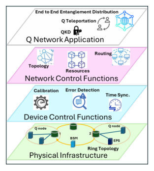
<figcaption class="paper-figure-caption"><b>Fig 1.</b> Figure 1: Reproduced architecture of quantum network lay- ers and their functions, developed by IEQNET, led by Fermi- lab [9, 10]</figcaption>
</figure>
<figure class="paper-figure-card">

<figcaption class="paper-figure-caption"><b>Fig 2.</b> Figure 1 presents one layered perspective of a quantum net- work, comprising physical infrastructure, device-control functions, network-control functions, and quantum-network applications. It illustrates how application-level capabilities, including QKD, quan- tum teleportation, and end-to-end entanglement distribution, de- pend on the coordinated operation of devices, protocols, and control functions across interconnected layers. Although the layers organisation and terminology may differ across architectural proposals, the figure demonstrates that the operation and performance of each layer depend on functions, resources, and information exchanged across other layers. This ar- chitectural...</figcaption>
</figure>
<figure class="paper-figure-card">
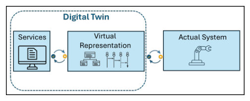
<figcaption class="paper-figure-caption"><b>Fig 3.</b> Figure 2: DT conceptualisation to three main components: actual system, virtual representation (mirror), and service for synchronisation or user interface [33]</figcaption>
</figure>
<figure class="paper-figure-card">
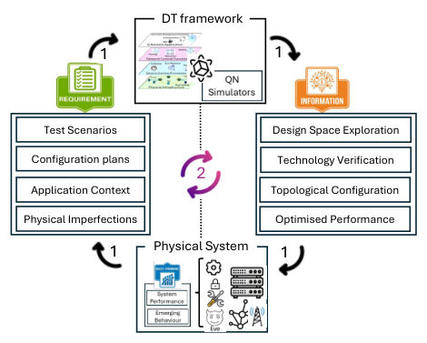
<figcaption class="paper-figure-caption"><b>Fig 4.</b> Figure 3: DT framework requirements across the design-time and runtime loops.</figcaption>
</figure>
<figure class="paper-figure-card">
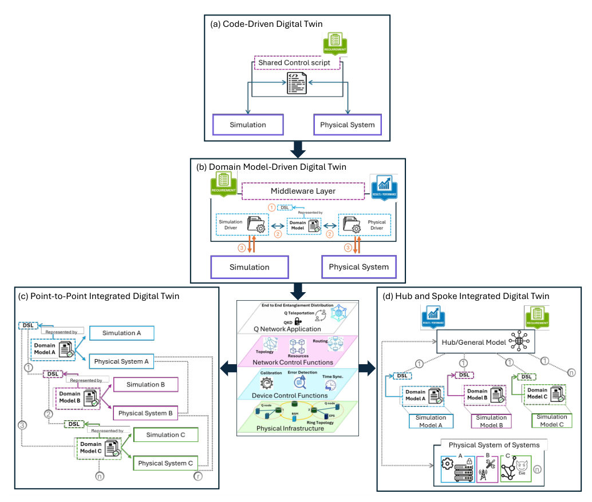
<figcaption class="paper-figure-caption"><b>Fig 5.</b> Figure 4: Progressive architectures for QN digital twins: (a) a script-driven architecture in which a shared control script directly coordinates the simulated and physical systems; (b) a domain-model-driven architecture in which a domain-specific model and embodiment-specific drivers govern their configuration and interaction; (c) a point-to-point integrated architecture in which multiple DSLs interact through direct relationships to represent cross-domain interdependencies; and (d) a hub-and-spoke integrated architecture in which a general system model coordinates multiple domain models and the corresponding physical QN system of systems.</figcaption>
</figure>
</div>
<p><strong>Summary.</strong> This paper proposes a Model-Driven Engineering (MDE) framework to overcome the fragmentation in evaluating large-scale Quantum Networks. It establishes a systematic approach for building digital twins that integrate diverse components—from system models (SysML v2) to physical hardware kits and simulators. The resulting framework allows for rigorous, traceable testing of network performance across design and runtime phases.</p>
<p><strong>Why it may be interesting.</strong> This work is highly relevant as it addresses the crucial engineering challenge of validating complex quantum hardware systems by providing a formal, model-driven methodology to link theory/simulation with physical realization.</p>
<details>
<summary>Detailed structure</summary>
<p><strong>Main problem.</strong> Evaluating quantum networks is difficult due to fragmentation across heterogeneous platforms, simulators, and abstractions, leading to isolated digital twin studies.</p>
<p><strong>Main result.</strong> The paper proposes a Model-Driven Engineering (MDE) framework that provides a systematic basis for creating adaptable and interoperable system-level digital twins for quantum networks.</p>
<p><strong>Method.</strong> It derives requirements for design-time evaluation and runtime synchronization, proposing an architectural progression from code-driven to hub-and-spoke integration using MDE principles.</p>
<p><strong>Model / system.</strong> The focus is on Quantum Networks (QNs) and their digital twin representation. The framework uses SysML v2 as a 'hub model' to integrate physical QKD kits, simulators, and control logic.</p>
<p><strong>Key observables.</strong> System-level performance metrics such as throughput, keyRate, latency, and errorRate are used for comparison between predicted (simulated) and observed (physical) behavior.</p>
<p><strong>Important parameters / regimes.</strong> Quantum channel distance ($d$), maximum allowed error rate ($  ext{maxAllowedErrorRate}$), and network configuration parameters.</p>
<p><strong>Assumptions / limitations.</strong> The primary assumption is that MDE can systematically manage the complexity arising from integrating diverse, heterogeneous quantum simulation tools and physical hardware interfaces.</p>
<p><strong>Figures summary.</strong> Figures illustrate the layered structure of QNs and the conceptualization of a Digital Twin (Actual System $\leftrightarrow$ Virtual Mirror $\leftrightarrow$ Services). A key figure shows the hub-and-spoke architecture mapping to a BB84 feasibility implementation.</p>
<p><strong>Paper structure.</strong> The paper first identifies the fragmentation problem, then introduces MDE as the solution foundation. It details the two operational loops (design-time/runtime) and progresses through four architectural levels of integration complexity before demonstrating a proof-of-concept using SysML v2 for QKD.</p>
</details>
<details>
<summary>Abstract</summary>
<p>Quantum networks are advancing towards larger and more operational infrastructures, yet their evaluation remains fragmented across heterogeneous physical platforms, simulators, protocols, and architectural abstractions. Current digital-twin studies for quantum networks mainly realise isolated capabilities or application-specific solutions rather than reusable system-level twins. This paper argues that Model-Driven Engineering (MDE) can provide a systematic basis for integrating and evolving these heterogeneous artefacts. It derives requirements for design-time evaluation and runtime synchronisation, and proposes a progression of architectures from code-driven and domain-model-driven solutions to point-to-point and hub-and-spoke integration. A conceptual implementation case study illustrates this using SysML v2, QKD kit, an EMF-based controller, and SeQUeNCe. The work provides a foundation for adaptable and interoperable digital twins for quantum networks.</p>
</details>
<p><sub><a href="#top">↑ back to top</a></sub></p>

<p><a id="paper-2607.11596"></a></p>
<h3 id="moment-structured-block-encodings-of-periodic-finite-difference-operators"><a href="http://arxiv.org/abs/2607.11596v1">Moment-Structured Block Encodings of Periodic Finite-Difference Operators</a></h3>
<p><strong>Authors:</strong> Jishnu Mahmud, Rebekah Herrman<br>
<strong>Type:</strong> theory · <strong>Category:</strong> quantum information and computing · <strong>PDF:</strong> <a href="https://arxiv.org/pdf/2607.11596v1">https://arxiv.org/pdf/2607.11596v1</a><br>
<strong>Analysis basis:</strong> full PDF text, analyzed in chunks</p>
<div class="figure-strip-hint">↔ Scroll figures horizontally</div>
<div class="paper-figures-scroll">
<figure class="paper-figure-card">
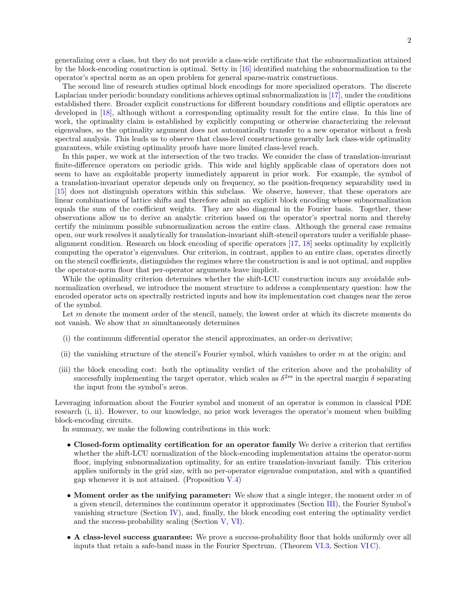
<figcaption class="paper-figure-caption"><b>Fig 1.</b> Low-resolution page preview, page 2</figcaption>
</figure>
<figure class="paper-figure-card">
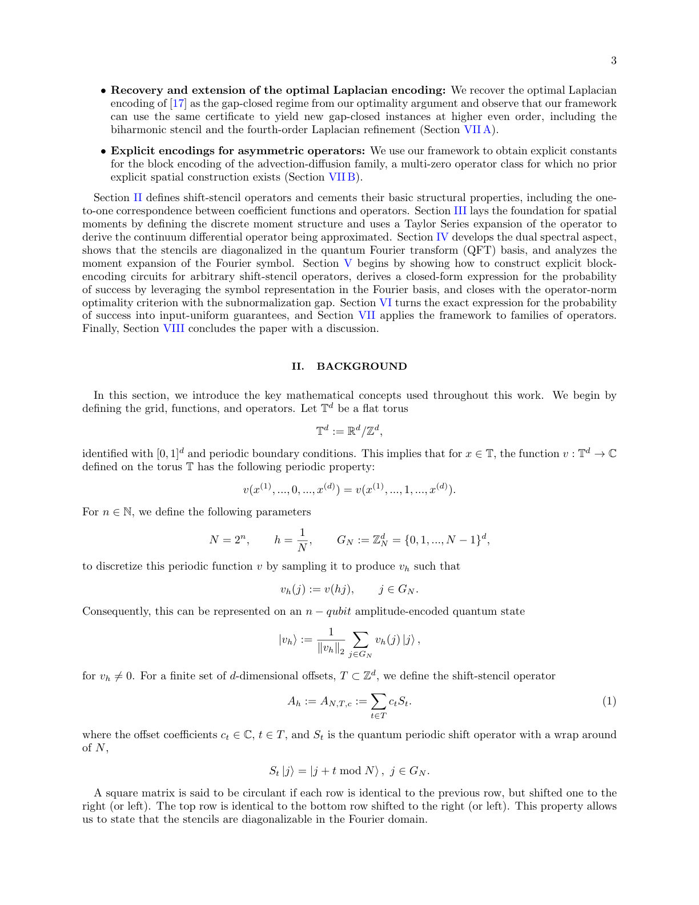
<figcaption class="paper-figure-caption"><b>Fig 2.</b> Low-resolution page preview, page 3</figcaption>
</figure>
<figure class="paper-figure-card">
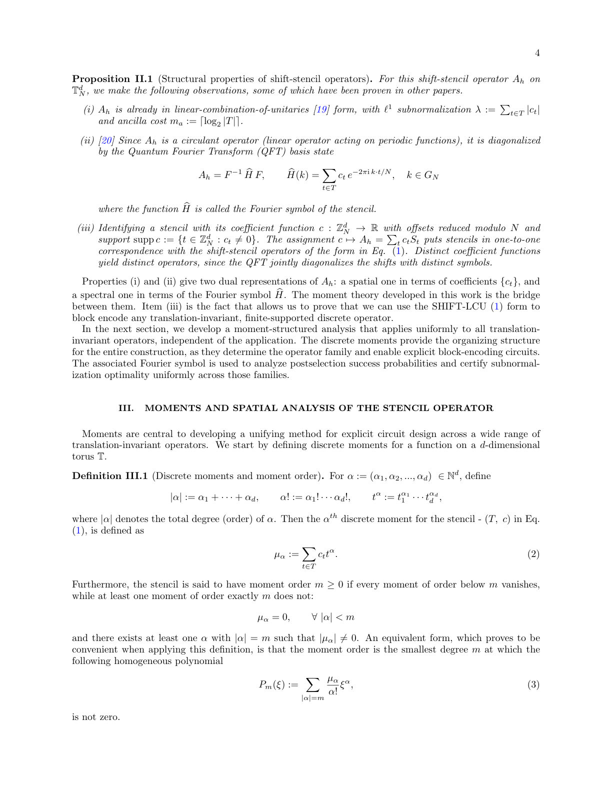
<figcaption class="paper-figure-caption"><b>Fig 3.</b> Low-resolution page preview, page 4</figcaption>
</figure>
<figure class="paper-figure-card">
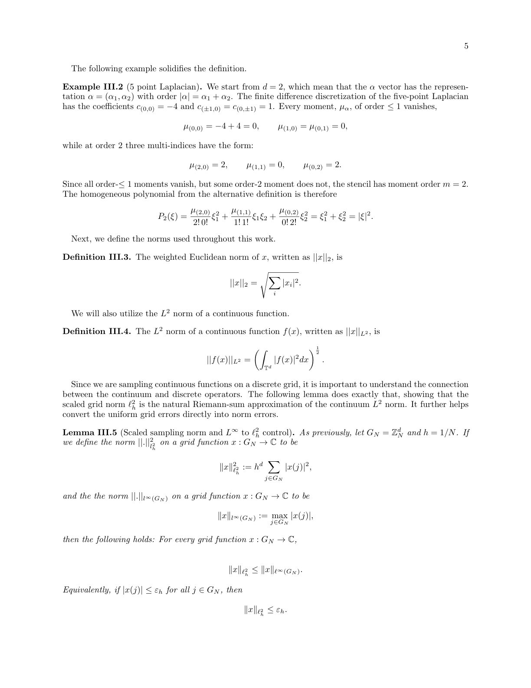
<figcaption class="paper-figure-caption"><b>Fig 4.</b> Low-resolution page preview, page 5</figcaption>
</figure>
<figure class="paper-figure-card">
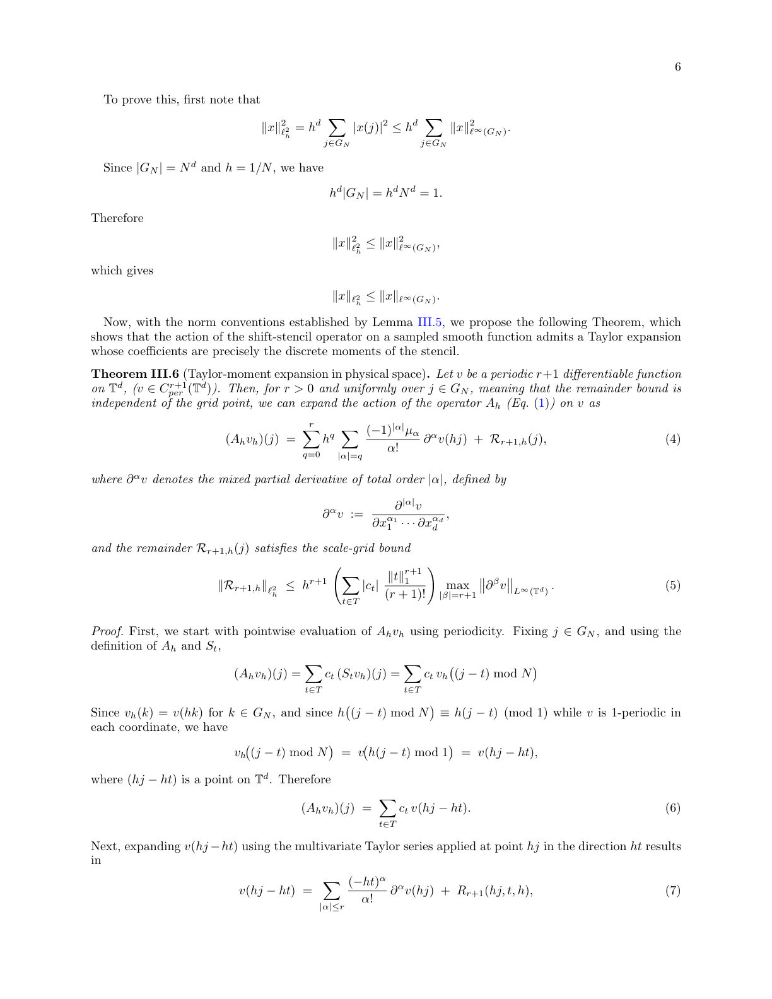
<figcaption class="paper-figure-caption"><b>Fig 5.</b> Low-resolution page preview, page 6</figcaption>
</figure>
</div>
<p><strong>Summary.</strong> This work introduces a moment-structured framework to systematically block encode finite-difference approximations of PDEs for quantum computing. By linking the stencil's moment order ($m$) to its spectral properties and encoding cost, it provides an optimality criterion that certifies resource efficiency across entire families of operators. This advances the practical application of quantum algorithms to core scientific computations.</p>
<p><strong>Why it may be interesting.</strong> It provides a rigorous, systematic method to analyze the quantum resource cost associated with simulating fundamental PDEs using quantum algorithms, directly impacting algorithm feasibility.</p>
<details>
<summary>Detailed structure</summary>
<p><strong>Main problem.</strong> Developing a unified framework to efficiently block encode translation-invariant finite-difference operators for use in quantum linear-algebra algorithms.</p>
<p><strong>Main result.</strong> The moment order ($m$) of the stencil simultaneously determines the continuum operator approximated, the symbol's vanishing structure, and provides an explicit optimality criterion for the block encoding subnormalization.</p>
<p><strong>Method.</strong> The analysis uses moment theory to relate discrete stencils (spatial domain) to their Fourier symbols (spectral domain), allowing a unified characterization based on the moment order $m$.</p>
<p><strong>Model / system.</strong> The model involves discretizing constant-coefficient Partial Differential Equations (PDEs) on a periodic grid ($\mathbb{T}^d$) using finite-difference stencils, which are represented by shift-stencil operators.</p>
<p><strong>Key observables.</strong> Subnormalization ($\lambda$), Moment Order ($m$), Success Probability ($   ext{psucc}$), and the Fourier symbol $b_H(k)$.</p>
<p><strong>Important parameters / regimes.</strong> The moment order $m$ is central, governing the scaling of success probability ($\Theta(h^{2m})$) and the accuracy of the continuum approximation.</p>
<p><strong>Assumptions / limitations.</strong> The analysis is restricted to translation-invariant operators with constant coefficients on a periodic grid; optimality criteria are derived under specific structural conditions.</p>
<p><strong>Figures summary.</strong> Not specified by notes, but the structure implies showing how $m$ dictates the relationship between spatial stencils and spectral properties/encoding costs.</p>
<p><strong>Paper structure.</strong> The paper builds from defining the problem (block encoding of PDEs) to establishing moment theory links (spatial $\leftrightarrow$ spectral), deriving the optimality criterion based on $m$, and finally applying this framework to specific families like Laplacian and advection-diffusion operators.</p>
</details>
<details>
<summary>Abstract</summary>
<p>Block encoding is the standard technique for accessing matrix data in quantum linear-algebra algorithms. Its implementation directly affects its subnormalization, which in turn controls the algorithm's success probability, simulation time, and downstream costs. Explicit construction of block encodings with provably optimal subnormalization exists for only a handful of operators, with bespoke calculations used in its design. In this work, we develop a framework to block encode translation-invariant finite-difference operators on a periodic grid. These operators are the finite-difference discretizations of the constant-coefficient partial differential equations that sit at the core of scientific computing. We show that the moment order of these stencils can be used to simultaneously determine the continuum operator approximated, the vanishing order of the Fourier symbol, and the cost of the block encoding. From there, we derive a closed-form optimality criterion as a function of the stencil coefficients, which certifies whether the construction attains the optimal subnormalization for an entire operator family, uniformly in grid size, and quantifies the gap when it does not. The framework subsumes optimal constructions for the Laplacian operator in the literature and can be used to certify new instances at higher even orders, including the biharmonic operator. Furthermore, we derive success-probability floors parameterized by spectral properties of the operator's symbol and find explicit constants for the block encoding of the advection-diffusion family for which no prior explicit spatial block encoding exists.</p>
</details>
<p><sub><a href="#top">↑ back to top</a></sub></p>

<p><a id="paper-2607.10473"></a></p>
<h3 id="quantum-algorithm-for-clifford-multiplication"><a href="http://arxiv.org/abs/2607.10473v1">Quantum algorithm for Clifford multiplication</a></h3>
<p><strong>Authors:</strong> Kagwe A. Muchane<br>
<strong>Type:</strong> theory · <strong>Category:</strong> quantum information and computing · <strong>PDF:</strong> <a href="https://arxiv.org/pdf/2607.10473v1">https://arxiv.org/pdf/2607.10473v1</a><br>
<strong>Analysis basis:</strong> full PDF text, analyzed in chunks</p>
<div class="figure-strip-hint">↔ Scroll figures horizontally</div>
<div class="paper-figures-scroll">
<figure class="paper-figure-card">
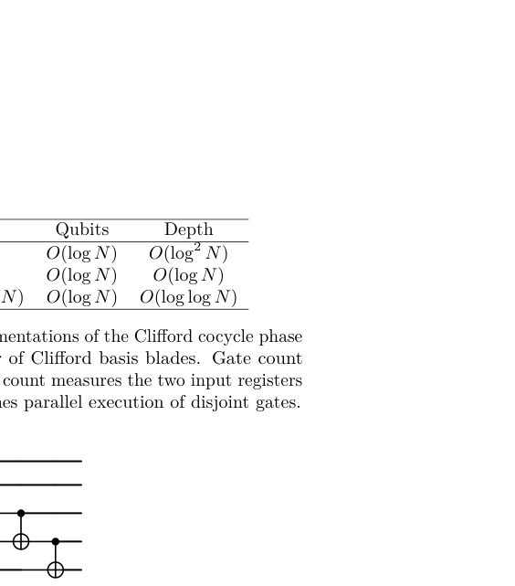
<figcaption class="paper-figure-caption"><b>Fig 1.</b> Figure 2: Elementary sweep variant of UT for n = 5. Each CNOT implements the transvection Ei+1,i, propagating the binary prefix sum through the register. The circuit maps |y⟩7→|Ty⟩with n −1 CNOT gates and depth n −1.</figcaption>
</figure>
<figure class="paper-figure-card">
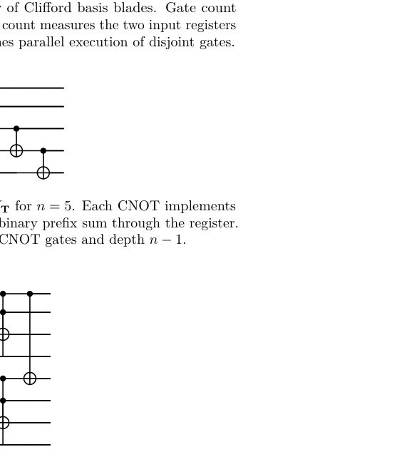
<figcaption class="paper-figure-caption"><b>Fig 2.</b> Figure 3: Schematic dyadic prefix construction for UT. The m-th stage propa- gates partial prefix sums across distance 2m. With a parallel-prefix implementa- tion, the propagation distance doubles at each stage, giving depth O(log n) and O(n log n) CNOT gates.</figcaption>
</figure>
</div>
<p><strong>Summary.</strong> This paper presents an exponential speedup quantum algorithm for computing the product of multivectors in a Clifford algebra. By mapping the multiplication to a cocycle-twisted convolution, the authors achieve polylogarithmic gate complexity. This establishes Clifford multiplication as a fundamental 'quantum primitive' with implications for geometric and relativistic simulations.</p>
<p><strong>Why it may be interesting.</strong> This work provides a concrete example of applying advanced quantum algorithms (like those for convolutions) to fundamental mathematical structures arising in theoretical physics, offering potential computational speedups for relativistic simulations or geometric computations.</p>
<details>
<summary>Detailed structure</summary>
<p><strong>Main problem.</strong> The core problem is developing an efficient quantum algorithm for computing the geometric product of two dense multivectors within a Clifford algebra.</p>
<p><strong>Main result.</strong> The authors demonstrate an exponential speedup, achieving the multiplication in $O(	ext{polylog } N)$ time using amplitude encoding, establishing Clifford multiplication as a quantum primitive.</p>
<p><strong>Method.</strong> The algorithm reformulates the geometric product as a cocycle-twisted convolution over $(\mathbb{Z}_2)^n$, which is then implemented using controlled gates based on matrix factorizations (sweep or dyadic) and the Quantum Fourier Transform.</p>
<p><strong>Model / system.</strong> The system modeled is the Clifford algebra $    ext{C}\ell(V, Q)$, whose structure governs multivector multiplication. This algebra is relevant for Euclidean, projective, conformal, and spacetime geometry simulations.</p>
<p><strong>Key observables.</strong> The normalized scalar weight ($\langle	ext{AB}|M_0|	ext{AB}
angle$) and expectation values derived from projectors onto specific subspaces (grades or parity sectors) of the resulting state $|	ext{AB}
angle$.</p>
<p><strong>Important parameters / regimes.</strong> The size $N=2^n$ of the multivector space, the circuit depth ($O(\log n)$ for dyadic), and the success probability $p_0$ which dictates postselection overhead.</p>
<p><strong>Assumptions / limitations.</strong> The analysis assumes the ability to implement required transformations (like the resolvent matrix inverse) using controlled quantum gates, and that state preparation of arbitrary amplitudes is possible.</p>
<p><strong>Figures summary.</strong> Figures illustrate the schematic structure of the optimized Clifford cocycle oracle $U_{\chi}$ using controlled-Z gates and show comparisons between elementary sweep and dyadic prefix constructions for implementing necessary transformations.</p>
<p><strong>Paper structure.</strong> The paper progresses by first establishing the classical bottleneck, then mapping the problem to a twisted convolution. It details the quantum implementation via the oracle $U_\chi$, analyzes resource scaling (sweep vs. dyadic), and concludes by showing how this enables solving promise decision problems related to state observables.</p>
</details>
<details>
<summary>Abstract</summary>
<p>Given two dense multivectors of the Clifford algebra $C\ell(V, Q)$ with $N=2^{p+q}$ coefficients, the fastest known classical algorithms compute their geometric product in $O(N^{ω/2})$ arithmetic operations, where $ω$ denotes the matrix multiplication exponent. I show that, under amplitude encoding, a quantum computer executes the geometric product in $O(\operatorname{polylog} N)$ time, using logarithmic space with sublogarithmic circuit depth. This exponential speedup establishes Clifford multiplication as a quantum primitive, providing an efficient computational foundation for quantum geometric algorithms and relativistic simulations.</p>
</details>
<p><sub><a href="#top">↑ back to top</a></sub></p>

<p><a id="paper-2607.11410"></a></p>
<h3 id="quantum-algorithms-for-second-order-boundary-value-problems"><a href="http://arxiv.org/abs/2607.11410v1">Quantum algorithms for second-order boundary value problems</a></h3>
<p><strong>Authors:</strong> Lauri Kettunen, Tejas Shinde<br>
<strong>Type:</strong> theory · <strong>Category:</strong> quantum information and computing · <strong>PDF:</strong> <a href="https://arxiv.org/pdf/2607.11410v1">https://arxiv.org/pdf/2607.11410v1</a><br>
<strong>Analysis basis:</strong> full PDF text, analyzed in chunks</p>
<div class="figure-strip-hint">↔ Scroll figures horizontally</div>
<div class="paper-figures-scroll">
<figure class="paper-figure-card">
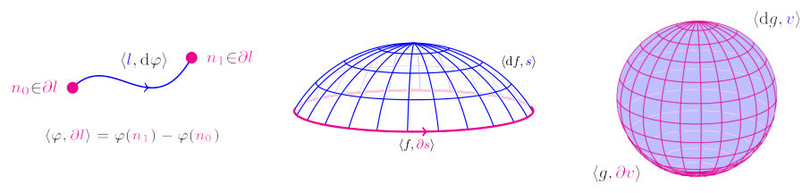
<figcaption class="paper-figure-caption"><b>Fig 1.</b> Figure 1: Illustrations of Stokes’ theorem in different dimensions. The domain is shown in blue and its boundary in magenta. Left: a curve with boundary nodes. Middle: a surface with boundary curve. Right: a volume with boundary surface. The general Stokes theorem expresses the duality between the exterior derivative and the boundary operator without requiring a metric structure.</figcaption>
</figure>
<figure class="paper-figure-card">
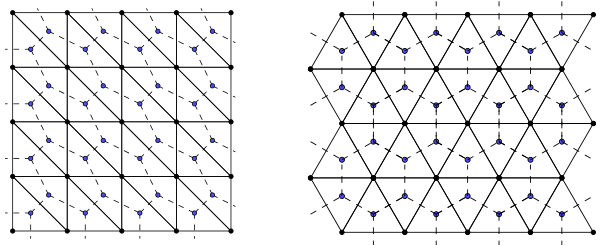
<figcaption class="paper-figure-caption"><b>Fig 2.</b> Figure 2: Examples of primal–dual mesh pairs in dimension n = 2. The primal mesh is shown with solid lines and the dual mesh with dashed lines. A primal p-cell is paired with a dual (n −p)-cell.</figcaption>
</figure>
<figure class="paper-figure-card">
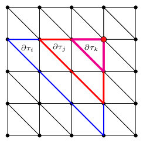
<figcaption class="paper-figure-caption"><b>Fig 3.</b> Figure 3: A simplicial complex illustrating bounding cycles at different scales. If ⟨f, ∂τ⟩= 0 holds for all relevant chains τ, then the pairing also vanishes on shrinking bounding cycles, shown here in blue, red, and magenta, down to the smallest cycles available in the cell complex. The finite-dimensional construction therefore replaces continuum virtual neighbourhoods by finitely many boundary relations.</figcaption>
</figure>
<figure class="paper-figure-card">
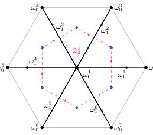
<figcaption class="paper-figure-caption"><b>Fig 4.</b> Figure 4: The local neighbourhood, or star, of node ω1 0 in a complex of regular triangles, together with the dual 2-cell ˜ω1 2 paired with ω1 0.</figcaption>
</figure>
<figure class="paper-figure-card">

<figcaption class="paper-figure-caption"><b>Fig 5.</b> Figure 5: The star of edge ω1 1 in a regular hexahedral complex, together with the dual facet ˜ω1 2 paired with ω1 1.</figcaption>
</figure>
</div>
<p><strong>Summary.</strong> This paper presents a novel framework to create quantum algorithms for solving complex second-order boundary value problems. Instead of using global matrix representations, the authors derive the necessary computational steps directly from the local geometric structure of differential operators using exterior calculus on cell complexes. This results in scalable, star-local update rules ideal for quantum circuit implementation.</p>
<p><strong>Why it may be interesting.</strong> While focused on PDEs, the core technique of mapping continuous differential structures into local, combinatorial update rules that bypass large matrices is highly relevant to developing efficient quantum algorithms for physical simulations beyond simple linear systems.</p>
<details>
<summary>Detailed structure</summary>
<p><strong>Main problem.</strong> Developing quantum algorithms capable of solving second-order boundary value problems (BVPs) that are central to computational science.</p>
<p><strong>Main result.</strong> The authors propose a framework that reformulates these continuous differential operators into simple, uniform, and scalable star-local update rules suitable for direct implementation on quantum circuits.</p>
<p><strong>Method.</strong> The method leverages concepts from exterior calculus (exterior derivative, adjoint, Hodge operator) applied to primal--dual cell complexes to derive discrete realizations of the operators, bypassing global matrix assembly.</p>
<p><strong>Model / system.</strong> The model involves solving PDEs like Poisson or curl-curl equations on a domain covered by an oriented cell complex. The physics is governed by Hodge-type constitutive relations linking different cochain degrees (e.g., 0-cochains for div-grad, 1-cochains for curl-curl).</p>
<p><strong>Key observables.</strong> The solution vector $\Lambda$ containing cochain values, and the source term $u$. The local update rule itself is a key computational object.</p>
<p><strong>Important parameters / regimes.</strong> Relaxation parameter $eta$, and the structure of the cell complex (primal/dual mesh).</p>
<p><strong>Assumptions / limitations.</strong> The domain must be covered by an oriented cell complex, and the framework assumes that local differential structure can be derived directly from incidence relations on cell complexes.</p>
<p><strong>Figures summary.</strong> Figures illustrate Stokes' theorem duality, primal-dual mesh pairs in 2D, how $df=0$ is imposed via bounding chains, and the local star neighborhood for nodes/edges.</p>
<p><strong>Paper structure.</strong> The paper builds from identifying the need to discretize continuous operators locally. It introduces the framework using exterior calculus on cell complexes, derives the finite-dimensional system ($\mathbf{D}^T \mathbf{H} \mathbf{\Lambda} = \mathbf{u}$), and then shows how this global matrix problem is mapped onto a star-local iterative update rule suitable for quantum circuit implementation.</p>
</details>
<details>
<summary>Abstract</summary>
<p>Second-order boundary value problems are central to computational science, yet standard matrix-based numerical formulations can obscure the local geometric structure that quantum circuits may exploit. Here we introduce a framework for explicitly constructing finite-dimensional counterparts of continuous differential operators in a form compatible with quantum computation. Starting from the exterior derivative, its adjoint, and the Hodge operator, we derive discrete realizations of second-order operators on primal--dual cell complexes and reformulate them as star-local update rules expressed through explicit functions that return the relevant bounding chains rather than through matrix representations. This yields simple, uniform, and scalable quantum circuits. We demonstrate the construction for div--grad and curl--curl operators, showing that the same star-local compilation principle extends across different operators, cell complexes, and manifold dimensions within a common framework. More generally, the framework provides a systematic route to quantum algorithms for partial differential equations.</p>
</details>
<p><sub><a href="#top">↑ back to top</a></sub></p>

<p><a id="paper-2607.10057"></a></p>
<h3 id="quantum-circuit-vision-cost-aware-evaluation-of-visual-ai-agents-for-quantum-code-generation"><a href="http://arxiv.org/abs/2607.10057v1">Quantum Circuit Vision: Cost-Aware Evaluation of Visual AI Agents for Quantum Code Generation</a></h3>
<p><strong>Authors:</strong> Dongping Liu, Aoyu Zhang, Luyao Zhang<br>
<strong>Type:</strong> both · <strong>Category:</strong> quantum information and computing · <strong>PDF:</strong> <a href="https://arxiv.org/pdf/2607.10057v1">https://arxiv.org/pdf/2607.10057v1</a><br>
<strong>Analysis basis:</strong> full PDF text, analyzed in chunks</p>
<div class="figure-strip-hint">↔ Scroll figures horizontally</div>
<div class="paper-figures-scroll">
<figure class="paper-figure-card">

<figcaption class="paper-figure-caption"><b>Fig 1.</b> Figure 1: QCV system overview. Top: QCV-Dataset provides 132 quantum circuits with five core data modalities—circuit images, executable code (Braket and Qiskit), simulation results, bilingual annotations, and annotated failure cases—plus supplementary target descriptions and equivalence pairs. Bottom: The evaluation pipeline processes a circuit diagram image through an MLLM under BV or TV mode, then verifies the generated code through syntax checking, execution, and unitary matrix fidelity (𝐹≥0.99).</figcaption>
</figure>
<figure class="paper-figure-card">

<figcaption class="paper-figure-caption"><b>Fig 2.</b> Figure 2: Representative circuits. Left column (a–c): increasing complexity from trivial to challenging. Right (d): the largest circuit (8 qubits, 20 gates) passes under BV with perfect fidelity due to its regular repeating structure, while the smaller QAOA (c) fails—demonstrating that structural regularity, not qubit count, determines success.</figcaption>
</figure>
<figure class="paper-figure-card">

<figcaption class="paper-figure-caption"><b>Fig 3.</b> Figure 3: Haiku on the Toffoli circuit: BV uses a nonexistent API, while TV’s analysis leads to the correct call. Although CoT shows no significant aggregate effect (𝑝= 0.69), indi- vidual cases like this illustrate how structured analysis can resolve specific API selection errors.</figcaption>
</figure>
<figure class="paper-figure-card">

<figcaption class="paper-figure-caption"><b>Fig 4.</b> Figure 4: Eleven blockchain-relevant quantum circuits (2–8 qubits) spanning consensus, cryptography, threat modeling, key distribution, secret sharing, fair protocols, private exchange, verifiable randomness, digital signatures, and validator agreement.</figcaption>
</figure>
<figure class="paper-figure-card">

<figcaption class="paper-figure-caption"><b>Fig 5.</b> Figure 5 shows the proposed Hybrid Agent for autonomous quan- tum circuit design. The agent uses QCV-Dataset as a RAG knowl- edge base, the unitary fidelity pipeline as a verification oracle, and the 268 annotated failure cases as negative examples. This architec- ture is proposed but not yet implemented.</figcaption>
</figure>
</div>
<p><strong>Summary.</strong> This paper introduces Quantum Circuit Vision (QCV), a cost-aware framework to test how well multimodal AI agents can translate visual quantum circuit diagrams into verified executable code. By benchmarking several frontier LLMs on 132 circuits, the authors found that optimizing model selection via cascade routing is more impactful for cost savings than advanced prompting techniques. This work establishes a new standard for evaluating AI in quantum software development.</p>
<p><strong>Why it may be interesting.</strong> It provides a rigorous, quantifiable methodology for assessing AI's ability to handle complex quantum information representations, which is crucial for future automated quantum algorithm development.</p>
<details>
<summary>Detailed structure</summary>
<p><strong>Main problem.</strong> The core problem is bridging the gap between visually presented quantum circuit diagrams and generating verified, executable code for quantum computation.</p>
<p><strong>Main result.</strong> A cost-aware evaluation framework was proposed, showing that mid-tier AI models offer the best balance of accuracy and computational cost, and model routing dominates prompt engineering as a cost lever.</p>
<p><strong>Method.</strong> The authors constructed a 132-circuit benchmark using executable Amazon Braket code and employed rigorous unitary-fidelity verification to evaluate multimodal AI agents.</p>
<p><strong>Model / system.</strong> The system involves evaluating frontier LLMs (like Claude) on quantum circuits spanning up to 10 qubits, with the ground truth verified via unitary fidelity checks against a simulator.</p>
<p><strong>Key observables.</strong> Pass rate, per-call cost (credits), circuit depth, and unitary fidelity ($\mathcal{F}$).</p>
<p><strong>Important parameters / regimes.</strong> Circuit depth is identified as the primary predictor of failure ($p<0.001$).</p>
<p><strong>Assumptions / limitations.</strong> The evaluation relies on the assumption that visual pattern recognition is key for structurally coupled quantum diagrams.</p>
<p><strong>Figures summary.</strong> Figures illustrate the proposed agent architecture and show quantitative results comparing pass rates across different model implementations for various quantum circuits.</p>
<p><strong>Paper structure.</strong> The paper introduces the QCV framework, details the 132-circuit benchmark construction, presents cost-accuracy trade-offs using LLM evaluations, analyzes failure modes (depth vs. qubits), and concludes with a cascade routing strategy proposal.</p>
</details>
<details>
<summary>Abstract</summary>
<p>Can AI agents visually comprehend quantum circuit diagrams and generate verified executable code--and at what cost? We present Quantum Circuit Vision, a cost-aware evaluation framework for multimodal AI agents on quantum circuit visual understanding. We construct a 132-circuit benchmark spanning 13 categories ($1$--$10$ qubits) with executable Amazon Braket code and unitary-fidelity verification. Evaluating three frontier Claude-family models at different capability-cost tiers with $n=5$ repeated trials, we find that the mid-tier model (Sonnet 4.6, $1.30\times$ credits) offers the most favorable balance on the cost-accuracy frontier: 91% pass rate on the core subset at 18% of the per-call cost of the strongest model (Opus 4.6), whose accuracy advantage is not statistically significant (paired $t$: $p=0.083$). Logistic regression confirms that circuit depth--not qubit count--is the primary predictor of failure ($p<0.001$). Chain-of-thought prompting shows no statistically significant effect (all $p>0.18$, $n=5$), suggesting that visual pattern recognition outweighs explicit reasoning strategy for structurally coupled diagrams. We propose a cascade routing strategy (cheap $\rightarrow$ expensive models) that achieves 84% accuracy at 38% of single-model cost, demonstrating that model routing dominates prompt engineering as a cost lever. We release QCV-Dataset (132 circuits, 5 modalities, 1,931 files) on Hugging Face Hub as an open evaluation infrastructure with structured metadata for discoverability, interoperability, and responsible AI documentation, and all evaluation code, cost logs, and verification scripts on GitHub for full reproducibility.</p>
</details>
<p><sub><a href="#top">↑ back to top</a></sub></p>

<p><a id="paper-2607.10284"></a></p>
<h3 id="rank-refined-quantum-behaved-particle-swarm-optimization-for-quantum-molecular-generation"><a href="http://arxiv.org/abs/2607.10284v1">Rank-Refined Quantum-Behaved Particle Swarm Optimization for Quantum Molecular Generation</a></h3>
<p><strong>Authors:</strong> Sing-Yun Wu, Sheng Yun Wu, I-Min Chiang, Tai-Yue Li<br>
<strong>Type:</strong> both · <strong>Category:</strong> quantum information and computing · <strong>PDF:</strong> <a href="https://arxiv.org/pdf/2607.10284v1">https://arxiv.org/pdf/2607.10284v1</a><br>
<strong>Analysis basis:</strong> full PDF text, analyzed in chunks</p>
<div class="figure-strip-hint">↔ Scroll figures horizontally</div>
<div class="paper-figures-scroll">
<figure class="paper-figure-card">

<figcaption class="paper-figure-caption"><b>Fig 1.</b> Fig. 1. RR-QPSO workflow for QMG parameter optimization. Sobol sampling initializes a swarm of M candidate parameter vectors, which are evaluated through QMG circuit sampling, bitstring decoding, molecular graph generation, and fitness computation. The independent particle evaluations are distributed across K GPUs, and the resulting scores are used to update the RR-QPSO swarm.</figcaption>
</figure>
<figure class="paper-figure-card">

<figcaption class="paper-figure-caption"><b>Fig 2.</b> Fig. 2. Optimizer performance comparison on the 9-heavy-atom QMG benchmark. The bars report validity, uniqueness, and their product. QPSO- based runs use M = 64 particles, T = 150 iterations, and 5000-shot molecular evaluation. RR-QPSO gives the highest validity–uniqueness product in this experimental setting.</figcaption>
</figure>
<figure class="paper-figure-card">

<figcaption class="paper-figure-caption"><b>Fig 3.</b> Fig. 3. Effect of particle count on RR-QPSO convergence. Curves show the best validity–uniqueness product observed up to each iteration for different swarm sizes M. The dashed line indicates BO.</figcaption>
</figure>
<figure class="paper-figure-card">

<figcaption class="paper-figure-caption"><b>Fig 4.</b> Fig. 4. Multi-objective optimization targeting HBA = 4 and HBD = 3. BO and RR-QPSO are evaluated under the same scalarized target-property objective. RR-QPSO retains a higher validity–uniqueness product while keeping the generated molecules close to the target HBA and HBD region in this scalarized setting.</figcaption>
</figure>
</div>
<p><strong>Summary.</strong> The paper proposes a novel optimization algorithm, RR-QPSO, to overcome the computational bottleneck in Quantum Molecular Generation (QMG). This method uses advanced swarm intelligence techniques to efficiently search high-dimensional parameter spaces governing quantum circuits. The results demonstrate that this optimizer design significantly improves molecular quality metrics compared to existing methods like Bayesian Optimization.</p>
<p><strong>Why it may be interesting.</strong> This work directly addresses the computational feasibility of quantum chemistry simulations by improving the optimization layer used to guide molecular structure generation from quantum circuits.</p>
<details>
<summary>Detailed structure</summary>
<p><strong>Main problem.</strong> The primary challenge is optimizing parameters for Quantum Molecular Generation (QMG) due to an expensive objective evaluation bottleneck involving stochastic circuit sampling.</p>
<p><strong>Main result.</strong> The proposed RR-QPSO significantly outperforms Bayesian Optimization on the 9-heavy-atom QMG benchmark, achieving a higher validity–uniqueness product (up to 0.942 vs 0.902).</p>
<p><strong>Method.</strong> The authors introduce Rank-Refined Quantum-Behaved Particle Swarm Optimization (RR-QPSO), which uses Sobol initialization and rank-refined mean-best updates as a population-based alternative to BO.</p>
<p><strong>Model / system.</strong> The work focuses on QMG, a process that generates molecules using a chemistry-inspired dynamic quantum circuit parameterized by $\theta$ within a 20-qubit system for the 9-heavy-atom benchmark.</p>
<p><strong>Key observables.</strong> Validity–Uniqueness product ($V \times U$), Validity ($V$), Uniqueness ($U$), mean HBA, and mean HBD.</p>
<p><strong>Important parameters / regimes.</strong> Circuit parameters $D=134$, Swarm size $M$ (e.g., 64 or 128), Iterations $T=150$.</p>
<p><strong>Assumptions / limitations.</strong> The objective function is noisy and expensive to evaluate because it relies on finite circuit samples from stochastic sampling.</p>
<p><strong>Figures summary.</strong> Figure 1 illustrates the RR-QPSO workflow: Sobol sampling $\rightarrow$ Parallel QMG Evaluation (on multiple GPUs) $\rightarrow$ Fitness Calculation ($F=V \times U$) $\rightarrow$ RR-QPSO Update. Other figures compare performance against BO and show scaling with particle count.</p>
<p><strong>Paper structure.</strong> The paper introduces the optimization bottleneck in QMG, proposes RR-QPSO as a superior population-based optimizer over BO, details its components (Sobol initialization, rank refinement), validates it on the 9-heavy-atom benchmark across varying swarm sizes, and extends to multi-objective property guidance.</p>
</details>
<details>
<summary>Abstract</summary>
<p>This work proposes Rank-Refined Quantum-Behaved Particle Swarm Optimization (RR-QPSO) for high-dimensional parameter search in Quantum Molecular Generation (QMG). RR-QPSO targets the optimization bottleneck caused by expensive objective evaluations, where each candidate parameter vector requires stochastic circuit sampling, bitstring decoding, and molecular evaluation. The method provides a population-based alternative to Bayesian optimization (BO), combining Sobol-based initialization, a rank-refined mean-best update, and fitness-guided refinement based on validity and uniqueness. Experiments use the 9-heavy-atom QMG benchmark with a 134-parameter, 20-qubit CUDA-Q circuit and particle evaluations parallelized across 8 NVIDIA V100 GPUs. With M=64 particles and T=150 iterations, RR-QPSO reaches VxU = 0.930; increasing the swarm size to M=128 further improves the product to 0.942, compared with 0.902 for BO under the same protocol. A multi-objective extension targeting HBA=4 and HBD=3 further shows that RR-QPSO can guide molecular properties while preserving a higher validity--uniqueness product than BO. These results suggest that optimizer-level design can improve QMG without modifying the chemistry-inspired circuit or molecular decoding pipeline.</p>
</details>
<p><sub><a href="#top">↑ back to top</a></sub></p>

<p><a id="paper-2607.10668"></a></p>
<h3 id="soft-point-contact-andreev-reflection-spectroscopy-in-a-palm-type-cubic-anvil-pressure-cell"><a href="http://arxiv.org/abs/2607.10668v1">Soft point-contact Andreev reflection spectroscopy in a palm-type cubic anvil-pressure cell</a></h3>
<p><strong>Authors:</strong> Qingxin Dong, Fengrui Shi, Yan Zhang, Tong Shi, Yi Liu, Shaoheng Ruan, Zhongjin Wu, Jianping Sun, Zhaoming Tian, Yoshiya Uwatoko, Guanghan Cao, Xin Lu, Bosen Wang, Jin-Guang Cheng<br>
<strong>Type:</strong> experiment · <strong>Category:</strong> strongly correlated electrons · <strong>PDF:</strong> <a href="https://arxiv.org/pdf/2607.10668v1">https://arxiv.org/pdf/2607.10668v1</a><br>
<strong>Analysis basis:</strong> full PDF text, analyzed in chunks</p>
<div class="figure-strip-hint">↔ Scroll figures horizontally</div>
<div class="paper-figures-scroll">
<figure class="paper-figure-card">

<figcaption class="paper-figure-caption"><b>Fig 1.</b> Low-resolution page preview, page 2</figcaption>
</figure>
<figure class="paper-figure-card">

<figcaption class="paper-figure-caption"><b>Fig 2.</b> Low-resolution page preview, page 3</figcaption>
</figure>
<figure class="paper-figure-card">

<figcaption class="paper-figure-caption"><b>Fig 3.</b> Low-resolution page preview, page 4</figcaption>
</figure>
<figure class="paper-figure-card">

<figcaption class="paper-figure-caption"><b>Fig 4.</b> Low-resolution page preview, page 5</figcaption>
</figure>
<figure class="paper-figure-card">

<figcaption class="paper-figure-caption"><b>Fig 5.</b> Low-resolution page preview, page 6</figcaption>
</figure>
</div>
<p><strong>Summary.</strong> This work introduces a novel and robust experimental platform—soft point-contact Andreev reflection spectroscopy (PCARS)—to measure superconducting gaps under ultra-high hydrostatic pressure. By testing this technique on various superconductors, the authors provide spectroscopic evidence suggesting unconventional pairing symmetries in materials like $  ext{CsCr}_3 ext{Sb}_5$ and $    ext{La}_2   ext{PrNi}_2 ext{O}_7$. This advances the field by bridging macroscopic transport measurements with microscopic quantum characterization under extreme conditions.</p>
<p><strong>Why it may be interesting.</strong> The ability to probe microscopic pairing symmetries (d-wave vs. s-wave) in strongly correlated materials like nickelates or kagome metals, while simultaneously applying extreme pressures, provides crucial data for understanding high-$T_c$ mechanisms relevant to condensed matter theory.</p>
<details>
<summary>Detailed structure</summary>
<p><strong>Main problem.</strong> The primary goal is to overcome the scarcity of reliable probes that can access microscopic superconducting-state properties, such as pairing symmetry, in materials under extreme high pressures.</p>
<p><strong>Main result.</strong> The authors successfully established a robust experimental platform using soft point-contact Andreev reflection spectroscopy (PCARS) in a cubic anvil cell, providing spectroscopic evidence consistent with unconventional superconductivity in pressure-induced superconductors like CsCr3Sb5 and La2PrNi2O7.</p>
<p><strong>Method.</strong> They employed PCARS by measuring the differential conductance (dI/dV) of normal-metal-superconductor junctions under hydrostatic pressures up to 15 GPa, utilizing a specialized substrate anchoring and wire-splitting technique.</p>
<p><strong>Model / system.</strong> The study investigates elemental superconductors (Nb) and complex oxides/chalcogenides ($   ext{CsCr}_3 ext{Sb}_5$, $   ext{La}_2   ext{PrNi}_2 ext{O}_7$) as systems exhibiting superconductivity. The analysis involves fitting the measured spectra using theoretical models for different pairing symmetries (e.g., isotropic s-wave vs. d-wave).</p>
<p><strong>Key observables.</strong> Superconducting gap magnitude ($\Delta$), zero-bias conductance peaks (ZBCP), and the ratio $2\Delta(0)/k_B T_c$.</p>
<p><strong>Important parameters / regimes.</strong> Hydrostatic pressure ($P$) up to 15 GPa, temperature ($T$), and applied magnetic field ($H$).</p>
<p><strong>Assumptions / limitations.</strong> The analysis relies on fitting the spectra using specific theoretical models (s-wave or d-wave) and assumes that observed features are not solely due to extrinsic contact resistance effects.</p>
<p><strong>Figures summary.</strong> Figures detail the setup in a CAC, showing $R(T)$ vs. pressure for multiple materials ($ ext{Nb}$, $ ext{CsCr}_3 ext{Sb}_5$, $   ext{La}_2   ext{PrNi}_2 ext{O}_7$), and presenting corresponding Andreev spectra ($dI/dV$) analyzed using theoretical fitting models.</p>
<p><strong>Paper structure.</strong> The paper systematically introduces the advanced experimental setup (PCARS in CAC), validates it with a benchmark material ($  ext{Nb}$), and then applies this robust technique sequentially to two different unconventional superconductors ($ ext{CsCr}_3 ext{Sb}_5$ and $    ext{La}_2   ext{PrNi}_2 ext{O}_7$) to characterize their superconducting gaps under pressure.</p>
</details>
<details>
<summary>Abstract</summary>
<p>We have implemented soft point-contact Andreev reflection spectroscopy (PCARS) in a palm-type cubic anvil pressure cell by combining a substrate anchoring strategy with an external wire-splitting technique. This design enables the stable formation of multiple point contact junctions under hydrostatic pressures up to 15 GPa. Benchmark measurements on the elemental superconductor Nb demonstrate high reproducibility and yield a zero-temperature superconducting gap with a gap ratio of 3.3. We further apply this technique to the Kagome metal superconductor CsCr3Sb5 and the bilayer nickelate superconductor La2PrNi2O7. Pronounced zero-bias conductance peaks are observed, and their evolution with temperature, magnetic field and applied pressure is investigated, together with the superconducting gap magnitude and possible pairing symmetries. These measurements provide spectroscopic evidence consistent with unconventional superconductivity in these materials. Our work establishes a robust experimental platform that bridges macroscopic electrical transport and microscopic spectroscopic probes, opening a new avenue for investigating pairing symmetry in a wide range of pressure-induced unconventional superconductors.</p>
</details>
<p><sub><a href="#top">↑ back to top</a></sub></p>

<p><a id="paper-2607.11115"></a></p>
<h3 id="strain-tuned-nodal-superconductivity-in-the-charge-ordered-kagome-metal-csvmath1554mathsbmath1555math"><a href="http://arxiv.org/abs/2607.11115v1">Strain-Tuned Nodal Superconductivity in the Charge-Ordered Kagome Metal CsV$_3$Sb$_5$</a></h3>
<p><strong>Authors:</strong> Yusuke Takeuchi, Akito Kobayashi, Saki Uchida, Takumi Nagao, Seigo Ogawa, Rui Zhou, Shinji Kawasaki, Fei Song, Hao Ni, Yong Zhao, Guo-qing Zheng<br>
<strong>Type:</strong> experiment · <strong>Category:</strong> strongly correlated electrons · <strong>PDF:</strong> <a href="https://arxiv.org/pdf/2607.11115v1">https://arxiv.org/pdf/2607.11115v1</a><br>
<strong>Analysis basis:</strong> full PDF text, analyzed in chunks</p>
<div class="figure-strip-hint">↔ Scroll figures horizontally</div>
<div class="paper-figures-scroll">
<figure class="paper-figure-card">

<figcaption class="paper-figure-caption"><b>Fig 1.</b> FIG. 2. (a) Strain dependence of the 121Sb-NQR spectra in the CDW state at T = 3.8 K. The spectra consist of the Sb(2) lines (left, ∼74 MHz) and the Sb(1) line (right, ∼78.2 MHz). The solid curves represent the best fits using a sum of two Gaussian functions for the Sb(2) site and a single Lorentzian function for the Sb(1) site. (b) Temperature dependence of the 121Sb-NQR 1/T1T for various strains, measured at the Sb(2) site (f = 74.1 MHz). The horizontal line is a guide to the eye. Error bars represent the standard deviations from the fitting parameters.</figcaption>
</figure>
<figure class="paper-figure-card">

<figcaption class="paper-figure-caption"><b>Fig 2.</b> FIG. 1. Temperature dependence of the ac-χ under (a) com- pressive and (b) tensile strains, measured in zero magnetic field. Arrows indicate the superconducting transition onset, T onset c (ε). (c) Strain dependence of T onset c (ε). The inset shows a schematic of the V kagome net, with arrows indicating the a-axis and the direction of the applied uniaxial pressure. The vertical dashed line marks the zero-strain position.</figcaption>
</figure>
<figure class="paper-figure-card">

<figcaption class="paper-figure-caption"><b>Fig 3.</b> FIG. 3. Temperature dependence of the 121Sb(2)-NQR 1/T1T under uniaxial strain. Data are shown for (a) ε = -0.46%, (b) 0, (c) +0.46%, (d) +0.68%, and (e) +0.90%. The 1/T1T and temperature (T) are normalized by their respective values at Tc(ε). The dashed lines mark the normalized transition point at T/Tc(ε) = 1, and the solid arrows indicate the onset of the superconducting transition. Error bars represent the standard deviations from the fitting parameters.</figcaption>
</figure>
<figure class="paper-figure-card">

<figcaption class="paper-figure-caption"><b>Fig 4.</b> FIG. 4. Temperature dependence of the 121Sb(2)-NQR 1/T1 at ε = 0 and +0.90%. Arrows indicate the respective su- perconducting transition temperatures, Tc. The solid and dashed lines show linear (∼T) and cubic (∼T 3) dependen- cies above and below Tc, respectively, as guides to the eye. The solid curve below Tc1 represents the fitting result with a two-component (s+d wave) model for ε = +0.90% (see text). Error bars represent the standard deviations from the fitting parameters.</figcaption>
</figure>
<figure class="paper-figure-card">

<figcaption class="paper-figure-caption"><b>Fig 5.</b> FIG. 5. Strain-temperature phase diagram of superconduc- tivity in CsV3Sb5 at zero magnetic field. Open squares show T onset c determined from ac-χ. The solid star and triangles represent the upper (Tc1) and lower (Tc2) transition temper- atures, respectively, as determined from the temperature de- pendence of 1/T1T. The dotted line is a guide to the eye following T onset c . Solid lines trace the boundaries for the emer- gent line-nodal state (possibly d-wave) and the nodeless state (s-wave) (see text). Vertical dashed line indicates ε = 0.</figcaption>
</figure>
</div>
<p><strong>Summary.</strong> This work uses uniaxial strain on CsV3Sb5 to decouple and independently tune its superconducting state from its intrinsic Charge Density Wave (CDW) order. By analyzing NQR relaxation rates, the authors reveal a multi-gap superconductivity that is selectively enhanced by tensile strain through strengthening anisotropic pairing interactions. This demonstrates high tunability in correlated quantum materials.</p>
<p><strong>Why it may be interesting.</strong> The ability to tune superconductivity via strain while keeping the competing charge order intact provides a clean platform for studying unconventional pairing mechanisms, which is highly relevant to understanding correlated electron physics in quantum materials.</p>
<details>
<summary>Detailed structure</summary>
<p><strong>Main problem.</strong> The study investigates the superconducting pairing symmetry in the charge-ordered Kagome metal CsV3Sb5 and how this superconductivity is tuned relative to the competing Charge Density Wave (CDW) order.</p>
<p><strong>Main result.</strong> Tensile strain significantly enhances the superconducting transition temperature ($T_c$) by selectively strengthening the anisotropic d-wave pairing interaction, allowing for independent tuning of superconductivity away from the bulk CDW order.</p>
<p><strong>Method.</strong> The research employs in-situ uniaxial pressure tuning combined with advanced spectroscopic techniques like Nuclear Quadrupole Resonance (NQR) and measurements of the nuclear spin-lattice relaxation rate ($1/T_1T$).</p>
<p><strong>Model / system.</strong> The physical system is the Kagome metal CsV3Sb5, which exhibits both CDW order and unconventional superconductivity. The analysis models the superconducting state using a two-component (s+d) gap structure.</p>
<p><strong>Key observables.</strong> Superconducting transition temperature ($T_c$), nuclear spin-lattice relaxation rate ($1/T_1T$) showing double transitions, and NQR spectral linewidth changes under strain.</p>
<p><strong>Important parameters / regimes.</strong> Tensile strain ($\varepsilon = +0.90\%$), critical temperatures ($T_{c1} = 3.6 	ext{ K}$, $T_{c2} = 3.0 	ext{ K}$), and the ratio of d-wave to s-wave pairing strengths.</p>
<p><strong>Assumptions / limitations.</strong> The analysis assumes that the superconducting state can be modeled as a weighted sum of anisotropic (d-wave) and isotropic (s-wave) components, and that strain primarily affects the pairing interaction strength rather than just the density of states.</p>
<p><strong>Figures summary.</strong> Figures illustrate $T_c$ enhancement with strain; NQR spectra show domain detwinning ($ ext{Sb}(1)$ linewidth narrowing); and $1/T_1T$ measurements reveal a distinct double transition structure at high tensile strain, allowing for fitting to an s+d wave model.</p>
<p><strong>Paper structure.</strong> The paper systematically addresses the competition between CDW and superconductivity using NQR under uniaxial strain. It first establishes that strain tunes $T_c$ independently of the robust CDW order. Subsequently, it uses detailed analysis of the temperature dependence of $1/T_1T$ to identify a multi-gap superconducting state whose enhancement is linked specifically to anisotropic pairing interactions.</p>
</details>
<details>
<summary>Abstract</summary>
<p>The nature of the superconducting pairing symmetry in the kagome metal CsV$_3$Sb$_5$ and its relationship with the charge density wave (CDW) order are central unresolved issues. Here, we investigate the evolution of superconductivity in CsV$_3$Sb$_5$ under in-situ uniaxial pressure using $^{121}$Sb nuclear quadrupole resonance (NQR). We find that tensile strain significantly enhances the superconducting transition temperature, $T_{\rm c}$, while the CDW remains unchanged, demonstrating that superconductivity can be tuned independently of the bulk charge order. At a tensile strain of $\varepsilon$ = +0.90%, the nuclear spin-lattice relaxation rate reveals a remarkable double transition: an upper transition at $T_{\rm c1}$ = 3.6 K to a nodal gap state, and a lower one at $T_{\rm c2}$ = 3.0 K characterized by a nodeless gap. These results evidence degenerate superconducting states with different gap symmetry in the kagome metal at ambient pressure which split under strain. Our work demonstrates a high tunability of superconductivity by uniaxial pressure.</p>
</details>
<p><sub><a href="#top">↑ back to top</a></sub></p>
</details>
<h2 id="secondary-cond-mat-archives">Secondary cond-mat archives</h2>
<p><em>Papers from cond-mat.mtrl-sci, mes-hall, other, soft, supr-con. These archives are de-prioritized — they appear at the end regardless of relevance score.</em></p>
<h3 id="relevant-in-secondary-archives-31">Relevant in secondary archives (31)</h3>

<p><a id="paper-2607.11704"></a></p>
<h3 id="thermodynamic-bound-on-the-fano-factor-of-a-coherent-thermoelectric-heat-engine">⭐ <a href="http://arxiv.org/abs/2607.11704v1">Thermodynamic bound on the Fano factor of a coherent thermoelectric heat engine</a></h3>
<p><strong>Highlighted author(s):</strong> Rosario Fazio<br>
<strong>Authors:</strong> Nahual Sobrino, Rosario Fazio, Matteo Acciai<br>
<strong>Type:</strong> theory · <strong>Category:</strong> statistical mechanics · <strong>PDF:</strong> <a href="https://arxiv.org/pdf/2607.11704v1">https://arxiv.org/pdf/2607.11704v1</a><br>
<strong>Analysis basis:</strong> full PDF text, analyzed in chunks
<strong>Topic relevance:</strong> <code>non-equilibrium dynamics</code> <strong>2/5</strong> · <code>non-equilibrium universality</code> <strong>2/5</strong> · <code>Keldysh / 2PI / non-Gaussian methods</code> <strong>1/5</strong> · <code>correlated / nonlocal dissipation</code> <strong>1/5</strong> · <code>driven-dissipative phase transition</code> <strong>1/5</strong> · <code>entanglement &amp; information structure</code> <strong>1/5</strong> · <code>methods for driven-dissipative</code> <strong>1/5</strong></p>
<div class="figure-strip-hint">↔ Scroll figures horizontally</div>
<div class="paper-figures-scroll">
<figure class="paper-figure-card">

<figcaption class="paper-figure-caption"><b>Fig 1.</b> FIG. 1. Sketch of a coherent thermoelectric heat engine op- erating between a hot (TH, µH) and a cold (TC, µC) reservoir of fermionic, bosonic, or classical carriers, connected through a scattering region. Transport properties are encoded in a transmission function T (E).</figcaption>
</figure>
<figure class="paper-figure-card">

<figcaption class="paper-figure-caption"><b>Fig 2.</b> FIG. 3. Numerical verification of the TURs derived in this work. (a) Fermions (red). (b) Bosons (blue). The transmission T (E) is formed by the union of up to three boxcars. Each point is obtained by randomly sampling reservoir temperatures, chemical potentials, the position and widths of the boxcars, retaining only heat-engine configurations. The gray dashed curve shows for comparison the general fermionic quantum TUR of Ref. [39], while the black dotted curve is the classical- TUR bound.</figcaption>
</figure>
<figure class="paper-figure-card">

<figcaption class="paper-figure-caption"><b>Fig 3.</b> FIG. 2. Analytic heat-engine TUR bounds. The brown curve is the fermionic bound of Eq. (3), which saturates at F →1/2. The pink curves show the result of Eq. (4) for τ = 3, 4, 5. The blue curve is the bosonic HE bound Eq. (5), which saturates at F →1. The gray shaded area is the region where a fermionic heat engine can operate, while the green shaded area is the region where there is a quantum advantage (see also the inset where we plot the difference ∆Fmin between the bound (3) and the classical-TUR bound). The bosonic HE bound is always more restrictive than the classical TUR, offering no quantum advantage.</figcaption>
</figure>
<figure class="paper-figure-card">

<figcaption class="paper-figure-caption"><b>Fig 4.</b> FIG. 4. Maximum efficiency ηmax/ηc allowed by different bounds as a function of the Fano factor. (a) Fermions. The dotted, dashed, and solid lines correspond to the classical bound (1), the quantum TUR of Ref. [39], and the heat engine quantum bound (2) derived here. (b) Bosons. The dotted and solid lines correspond to the classical bound (1) and the bound (6) derived here. For both panels, different colors indicate different values of the ratio γ = kBTC/|δµ|.</figcaption>
</figure>
</div>

<p><strong>Summary.</strong> This paper derives novel, engine-specific thermodynamic uncertainty relations that impose universal lower bounds on the Fano factor ($F$) for coherent thermoelectric heat engines. It finds distinct minimum $F$ values for fermions ($>1/2$) versus bosons/classical particles ($>1$). The methodology relies on advanced non-equilibrium statistical mechanics applied to quantum transport, providing tighter constraints than previously known general bounds.</p>
<p><strong>Why it may be interesting.</strong> This work provides a rigorous, physically motivated constraint on quantum noise in energy conversion devices. For AMO physicists working with quantum heat engines (e.g., superconducting circuits or optomechanical systems), this sets a fundamental benchmark for achievable efficiency and noise levels beyond generic thermodynamic limits.</p>
<details>
<summary>Detailed structure</summary>
<p><strong>Main problem.</strong> The paper derives a thermodynamic uncertainty relation (TUR) specific to coherent thermoelectric heat engines, aiming to establish universal lower bounds on the Fano factor ($F$). It refines existing general thermodynamic bounds by incorporating the constraints of steady-state quantum thermal machines.</p>
<p><strong>Main result.</strong> For fermionic carriers, the analysis establishes a new TUR imposing $F > 1/2$ for coherent heat engines. For bosonic and classical carriers, the bound is found to be $F > 1$, demonstrating that these engine-specific bounds are tighter than general quantum TURs.</p>
<p><strong>Method.</strong> The authors use theoretical derivations based on energy-resolved quantities, convexity arguments (Jensen's inequality), and optimization techniques applied to current noise and entropy production rates in coherent transport models.</p>
<p><strong>Model / system.</strong> The system modeled is a two-terminal conductor operating as a thermoelectric heat engine between hot ($T_H$) and cold ($T_C$) reservoirs. The analysis covers fermionic, bosonic, and classical carrier transport through an arbitrary transmission function $T(E)$.</p>
<p><strong>Key observables.</strong> Fano factor ($F = S_I/|I|$), efficiency ($\eta$), entropy production rate ($\sigma$), and the charge-current Thermodynamic Uncertainty Relation (TUR).</p>
<p><strong>Important parameters / regimes.</strong> Temperature ratio ($T_H$ vs $T_C$), bias parameters ($\delta\mu$), and dimensionless ratios like $\sigma/(2|I|)$.</p>
<p><strong>Assumptions / limitations.</strong> The analysis assumes coherent transport through a two-terminal conductor, often utilizing the ideal energy filter model as a starting point before generalizing to arbitrary transmission functions.</p>
<p><strong>Figures summary.</strong> Figures compare analytic TUR bounds (fermionic vs. bosonic) against classical and general quantum bounds, illustrating the region of 'quantum advantage.' Other figures map out working regions in parameter space for different thermodynamic processes.</p>
<p><strong>Paper structure.</strong> The paper progresses by first establishing the physical model (thermoelectric heat engine), deriving the specific TURs for fermions ($F>1/2$) and bosons/classical particles ($F>1$), comparing these to general bounds, and finally demonstrating the tightness of these limits using numerical evidence and analyzing saturation regimes.</p>
</details>
<details>
<summary>Abstract</summary>
<p>We show that for fermionic coherent thermoelectric transport, selecting heat-engine operation yields a thermodynamic uncertainty relation for the charge current that imposes a universal lower limit of $F > 1/2$ on the corresponding Fano factor. We find that violations of the thermodynamic uncertainty relation for classical Markov processes, typically associated with a quantum advantage, are far more restricted for heat engines than what is allowed by a generic thermodynamic process. For bosonic and classical carriers, the minimum Fano factor increases to $F > 1$, and the thermodynamic uncertainty relation for classical Markov processes is never violated. We provide numerical evidence that all the obtained bounds are tight and can be saturated by properly designed transmissions.</p>
</details>
<p><sub><a href="#top">↑ back to top</a></sub></p>

<p><a id="paper-2607.11278"></a></p>
<h3 id="mode-locking-instability-and-multiple-soliton-formation-in-gan-polariton-waveguide-cavities"><a href="http://arxiv.org/abs/2607.11278v1">Mode-locking instability and multiple soliton formation in GaN polariton waveguide cavities</a></h3>
<p><strong>Authors:</strong> O. Bahrova, V. Develay, H. Souissi, C. Brimont, L. Doyennette, B. Alloing, E. Cambril, S. Bouchoule, T. Ackemann, J. Zuniga-Perez, D. Solnyshkov, G. Malpuech, T. Guillet<br>
<strong>Type:</strong> both · <strong>Category:</strong> other · <strong>PDF:</strong> <a href="https://arxiv.org/pdf/2607.11278v1">https://arxiv.org/pdf/2607.11278v1</a><br>
<strong>Analysis basis:</strong> full PDF text, analyzed in chunks
<strong>Topic relevance:</strong> 🔥 <code>analog quantum simulation</code> <strong>4/5</strong> · 🔥 <code>driven-dissipative phase transition</code> <strong>4/5</strong> · <code>correlated cavity matter</code> <strong>3/5</strong> · <code>methods for driven-dissipative</code> <strong>3/5</strong> · <code>non-equilibrium dynamics</code> <strong>3/5</strong> · <code>non-equilibrium universality</code> <strong>3/5</strong> · <code>quantum optics experiment</code> <strong>3/5</strong> · <code>Keldysh / 2PI / non-Gaussian methods</code> <strong>2/5</strong> · <code>Tavis-Cummings &amp; cavity-many-emitter</code> <strong>2/5</strong> · <code>correlated / nonlocal dissipation</code> <strong>2/5</strong> · <code>entanglement &amp; information structure</code> <strong>1/5</strong> · <code>interference shaping light</code> <strong>1/5</strong> · <code>scars &amp; prethermalization</code> <strong>1/5</strong> · <code>superradiant laser</code> <strong>1/5</strong></p>
<div class="figure-strip-hint">↔ Scroll figures horizontally</div>
<div class="paper-figures-scroll">
<figure class="paper-figure-card">

<figcaption class="paper-figure-caption"><b>Fig 1.</b> FIG. 1. The GaN polariton waveguide cavity. (a) Scheme of the vertical cross-section of the waveguide, (b) 3D sketch of the Fabry-Perot ridge cavity formed by the 2 DBRs, with the pumping region shown in red; (c) Dispersion of the polari- ton branch at 150 K (violet circles) extracted from the FSR measurements, compared with the computed dispersion of the bare photon (magenta). The exciton resonance is shown as a green dashed line. The lasing modes are delimited by the red circle.</figcaption>
</figure>
<figure class="paper-figure-card">

<figcaption class="paper-figure-caption"><b>Fig 2.</b> FIG. 2. The transition between one- and two-soliton regimes. (a) Spectrally-resolved intensity of the emission measured in the experiment for different pump positions. (b) Spectra for peculiar distinct regimes (achieved by pumping at the posi- tions indicated by the blue and red dashed lines in (a)) illus- trating the presence of one and two bright temporal solitons (in blue and red, respectively). The middle row (c-d) shows the corresponding simulations results. The dashed curves in (d) are for the sech fit. (e) Free spectral range (FSR) calcu- lated for the experimentally measured spectra in (b) for the one- (in blue) and two-soliton (in red) cases. Two distinct group velocities are...</figcaption>
</figure>
<figure class="paper-figure-card">

<figcaption class="paper-figure-caption"><b>Fig 3.</b> FIG. 3. Two-soliton regime. (a) Real space intensity. The arrow on the left indicates the position of the pump center. Numbers mark reamplifications of the solitons via the reser- voir. (b) Rescaled intensities of the photon and exciton frac- tions together with the population of the excitonic reservoir (black curve) integrated over the pump region. Inset shows a zoom, where the dashed black curve corresponds to the rescaled black one from the main subfigure. (c) Emission in- tensity as function of position and energy for the case where more than one soliton is present in the cavity with distinct group velocities, and integrated for a time window (centered at t0) chosen to be shorter than...</figcaption>
</figure>
<figure class="paper-figure-card">

<figcaption class="paper-figure-caption"><b>Fig 4.</b> FIG. 4. (a) Time-resolved spectral intensity for the two- soliton regime (tw = 30 ps). (b) the corresponding time- integrated spectrum.</figcaption>
</figure>
<figure class="paper-figure-card">

<figcaption class="paper-figure-caption"><b>Fig 5.</b> FIG. 6. Soliton formation for larger sample of 100 µm. (a) In- tensity of emission as a function of pump position and energy. (b) Spectra for highlighted pump position demonstrating one (blue), two (red) and three-soliton (orange) cases. (c) Three- soliton spectra (light red curve) with the fit (dashed curve) obtained from numerical calculations, analogously to the or- ange curve in (b).</figcaption>
</figure>
</div>

<p><strong>Summary.</strong> This paper reports on the controlled generation of multiple solitons in GaN polariton waveguide cavities by manipulating the pumping laser's position. Using coupled Gross-Pitaevskii equations, the authors demonstrate that tuning this gain position allows switching between single and multi-soliton regimes. This confirms that the exciton reservoir dynamics are key to governing the complex nonlinear soliton splitting mechanism.</p>
<p><strong>Why it may be interesting.</strong> This work is highly relevant to quantum optics and open quantum systems as it deals with nonlinear wave phenomena (solitons) in a semiconductor microcavity system where gain saturation and coupling to an external reservoir are crucial non-equilibrium effects. The control mechanism via pump position offers a tunable platform for studying complex many-body dynamics.</p>
<details>
<summary>Detailed structure</summary>
<p><strong>Main problem.</strong> The study investigates the emergence of multi-soliton regimes and mode-locking instability within 1D ridge polariton waveguides.</p>
<p><strong>Main result.</strong> By tuning the position of the pumping laser (gain region), researchers can control the soliton formation, transitioning between single and multiple asynchronous solitons. The mechanism governing this splitting is linked to the exciton reservoir dynamics.</p>
<p><strong>Method.</strong> The research combines experimental measurements (spectrally-resolved intensity) with numerical simulations solving coupled 1D Gross-Pitaevskii equations for photons, excitons, and the reservoir.</p>
<p><strong>Model / system.</strong> The physical system is a GaN polariton waveguide cavity exhibiting strong light-matter coupling. The dynamics are modeled by three coupled nonlinear differential equations (Gross-Pitaevskii type) describing photon ($\varphi$), exciton ($\chi$), and excitonic reservoir ($n_R$) populations.</p>
<p><strong>Key observables.</strong> Soliton formation count (single vs. multiple), spectral distribution of emission intensity, Free Spectral Range (FSR), and group velocities of the solitons.</p>
<p><strong>Important parameters / regimes.</strong> Pump position relative to cavity length, characteristic time scales ($  au_{Ph},    au_{Ex},    au_{Res}$), and coupling constants ($g_{ ext{Res}}$).</p>
<p><strong>Assumptions / limitations.</strong> The dynamics are well-approximated by the coupled Gross-Pitaevskii equations; the system is studied in 1D geometry.</p>
<p><strong>Figures summary.</strong> Figures illustrate the cavity structure, the transition from single to double/triple soliton spectra based on pump position, and time evolution of populations and spatial spectral intensity.</p>
<p><strong>Paper structure.</strong> The paper establishes the physical platform (GaN polariton cavities), presents the governing coupled equations, details the experimental control knob (pump position), demonstrates the tuning mechanism between single and multiple solitons, and analyzes the underlying role of reservoir dynamics in soliton splitting.</p>
</details>
<details>
<summary>Abstract</summary>
<p>We study the emergence of multi-soliton regimes in 1D ridge polariton waveguides of two different lengths. We show that by varying the position of the gain, which in out-of-equilibrium polariton systems is provided by the pumping laser and its associated excitonic reservoir, it is possible to tune the regime of soliton formation between single and multiple solitons. This soliton dynamics can be quantitatively reproduced by solving the Gross-Pitaevskii equations of the coupled exciton-photon system, which show that the soliton splitting mechanism is governed by the exciton reservoir dynamics.</p>
</details>
<p><sub><a href="#top">↑ back to top</a></sub></p>

<p><a id="paper-2607.10457"></a></p>
<h3 id="chiral-electronically-decoupled-layers-of-1t-ws2-topological-insulator-via-neutral-molecule-intercalation"><a href="http://arxiv.org/abs/2607.10457v1">Chiral, Electronically Decoupled Layers of 1T'-WS2 Topological Insulator via Neutral-Molecule Intercalation</a></h3>
<p><strong>Authors:</strong> Jiaze Xie, Fatmagül Katmer, Fang Yuan, Jaime M. Moya, Guangming Cheng, Connor J. Pollak, Xiaoyu Song, Nirmal Roy, Yakov Bloch, Moshe Ben Shalom, Jennifer Cano, Leslie M. Schoop<br>
<strong>Type:</strong> both · <strong>Category:</strong> other · <strong>PDF:</strong> <a href="https://arxiv.org/pdf/2607.10457v1">https://arxiv.org/pdf/2607.10457v1</a><br>
<strong>Analysis basis:</strong> full PDF text, analyzed in chunks
<strong>Topic relevance:</strong> 🔥 <code>analog quantum simulation</code> <strong>4/5</strong> · <code>driven-dissipative phase transition</code> <strong>3/5</strong> · <code>methods for driven-dissipative</code> <strong>3/5</strong> · <code>non-equilibrium dynamics</code> <strong>2/5</strong> · <code>correlated / nonlocal dissipation</code> <strong>1/5</strong> · <code>correlated cavity matter</code> <strong>1/5</strong> · <code>entanglement &amp; information structure</code> <strong>1/5</strong> · <code>non-equilibrium universality</code> <strong>1/5</strong></p>
<div class="figure-strip-hint">↔ Scroll figures horizontally</div>
<div class="paper-figures-scroll">
<figure class="paper-figure-card">

<figcaption class="paper-figure-caption"><b>Fig 1.</b> Fig. 1 Crystal structures and topological hierarchy of WS2. 1T′-WS2 monolayer (a), 2M- WS2 bulk (b), and amine-intercalated WS2 superlattices (c). The 1T′ monolayer is predicted to be a 2D topological insulator (TI), namely a quantum spin Hall (QSH) insulator, whereas the bilayer-based 2M bulk phase, characterized by strong interlayer coupling, experimentally shows a 3D electronic state that is metallic and superconducting. In this work, neutral amine intercalation suppresses the interlayer coupling, decoupling the stacked 1T′ layers and restoring monolayer-like electronic behavior within a translational superlattice. W and S atoms are represented by cyan and yellow spheres, respec- tively....</figcaption>
</figure>
<figure class="paper-figure-card">

<figcaption class="paper-figure-caption"><b>Fig 2.</b> Fig. 2 Synthesis and structural and chemical characterization of amine-intercalated WS2, exemplified by R-MBA. Schematic of reversible (de)intercalation in 2M-WS2 using MBA (a), with ex situ PXRD tracking the structural evolution (b). Pawley refinement of WS2(rac-MBA)0.5 confirms the intercalated phase (c). Raman (d), W 4f XPS (e), and DSC (f) collectively evidence the intercalation-induced structural and electronic changes. Full characterization of all amine-intercalated phases is provided in Extended Data Fig. 2.</figcaption>
</figure>
<figure class="paper-figure-card">

<figcaption class="paper-figure-caption"><b>Fig 3.</b> Fig. 3 Structural evolution of amine-intercalated WS2 at atomic resolution, exemplified by R-MBA. Schematic of the structural evolution associated with the lattice and symmetry changes (a). Cross-sectional HRSTEM (along the b-axis) of 2M-WS2 (b) and WS2(R-MBA)0.5 (c), together with cross-sectional electron diffraction of WS2(R-MBA)0.5 (d). Simulated in-plane W atomic lattices and corresponding HRSTEM images of the 1T′-WS2 monolayer (ML, e, g) and WS2(R-MBA)0.5 (f, h) along the a∗projection. Simulated in-plane electron diffraction patterns of 2M-WS2 (i) and 1T′-WS2 (j), alongside experimental in-plane diffraction of the 1T′-WS2 monolayer (k) and WS2(R- MBA)0.5 (l), all viewed along the...</figcaption>
</figure>
<figure class="paper-figure-card">

<figcaption class="paper-figure-caption"><b>Fig 4.</b> Fig. 4 Physical properties before and after amine intercalation in WS2, exemplified by R-MBA. Temperature-dependent resistance of 2M-WS2 and WS2(R-MBA)0.5 crystals (a); the inset highlights the low-temperature superconductivity in 2M-WS2. Magnetic susceptibilities of 2M-WS2, WS2(R-MBA)0.5, and restored 2M-WS2 after deintercalation, highlighting the changes in diamagnetic response associated with superconductivity (b). Full characterization of all amine-intercalated phases is provided in Extended Data Fig. 3. Samples were zero-field cooled (ZFC) and subsequently measured under an applied magnetic field of 5 Oe. Field-cooled (FC) results are included in Fig. S24.</figcaption>
</figure>
<figure class="paper-figure-card">

<figcaption class="paper-figure-caption"><b>Fig 5.</b> Fig. 5 Topology is recovered upon intercalation. Crystal structures and corresponding orbital- projected band structures along the Γ-Y path of the monolayer (a), bilayer (b), and 1T′-WS2-NH3 superlattice (c). Topological analysis indicates that the WS2-NH3 superlattice retains the nontrivial topology of the monolayer, characterized by Z2 = 1. Band structures along the full Brillouin-zone paths are provided in Extended Data Fig. 6.</figcaption>
</figure>
</div>

<p><strong>Summary.</strong> The study overcomes the challenge of studying $1T'-	ext{WS}_2$ topological insulators by chemically intercalating neutral amine molecules into the bulk material. This process expands the interlayer spacing and electronically decouples the layers, allowing researchers to observe monolayer-like insulating behavior in a stable superlattice structure.</p>
<p><strong>Why it may be interesting.</strong> This work provides an accessible chemical pathway to engineer quantum materials states (like TI behavior) that are otherwise difficult or impossible to isolate experimentally, which is highly relevant for building artificial quantum systems.</p>
<details>
<summary>Detailed structure</summary>
<p><strong>Main problem.</strong> The intrinsic topological insulator properties of monolayer $1T'-	ext{WS}_2$ are masked by strong interlayer coupling in its bulk phase, preventing direct experimental study.</p>
<p><strong>Main result.</strong> Amine intercalation successfully creates superlattices where the $1T'$ layers are electronically decoupled from each other, enabling reversible switching between superconducting metal and insulating states matching monolayer behavior.</p>
<p><strong>Method.</strong> The researchers employed a wet-chemical amine intercalation route to structurally modify the bulk $ ext{WS}_2$ into an intercalated superlattice structure.</p>
<p><strong>Model / system.</strong> The system is based on $    ext{WS}_2$ dichalcogenides, transitioning from the metallic/superconducting $2M-	ext{WS}_2$ bulk phase to electronically decoupled, insulating superlattices via neutral-molecule intercalation.</p>
<p><strong>Key observables.</strong> Interlayer spacing expansion (from 0.5 nm to 1-4 nm), electronic transition from metallic to insulating state with a measurable activation gap, and observation of chiroptical activity using chiral amines.</p>
<p><strong>Important parameters / regimes.</strong> Amine spacer length/type ($ ext{R-MBA}$, $  ext{HexA}$), interlayer spacing (e.g., $17.2 \mathring{	ext{A}}$ expansion), activation gap ($20-50 	ext{ meV}$).</p>
<p><strong>Assumptions / limitations.</strong> The electronic decoupling is primarily due to the physical separation by the intercalant, allowing DFT calculations to confirm retention of the monolayer's $\mathbb{Z}_2$ topology.</p>
<p><strong>Figures summary.</strong> Figures illustrate structural changes via PXRD (expanded spacing), electronic state changes via transport measurements (metal-to-insulator crossover), and optical characterization showing chiroptical effects.</p>
<p><strong>Paper structure.</strong> The paper establishes the problem of interlayer coupling, presents the chemical intercalation method using amines, details structural/electronic characterizations (PXRD, transport, XPS), confirms electronic decoupling and topological retention via DFT, and concludes by establishing this as a general route for studying monolayer physics in bulk crystals.</p>
</details>
<details>
<summary>Abstract</summary>
<p>Monolayer 1T'-WS2 is predicted to be a two-dimensional topological insulator, but its intrinsic electronic properties are masked by strong interlayer coupling in its metallic and superconducting bulk parent phase, 2M-WS2. Isolating monolayers by mechanical exfoliation is also hindered by this coupling, preventing experimental examination of monolayer properties. Here we show that 2M-WS2 undergoes amine intercalation through a simple wet-chemical reaction, yielding superlattices in which the 1T' layers are structurally preserved but electronically decoupled by neutral molecular spacers. Intercalation expands the interlayer spacing from 0.5 to 1-4 nm and reconstructs the stacking while preserving the intralayer 1T' framework. Controlled (de)intercalation reversibly switches the system between a superconducting metal and an insulator with an activation gap matching that of the isolated monolayer. Density functional theory indicates that the electronically decoupled layers retain the nontrivial Z2 topology of the monolayer. Chiral amine intercalation further induces chiroptical activity in WS2 electronic transitions. Overall, the successful intercalation challenges the long-held view that group VIB dichalcogenides are inert toward neutral-molecule intercalation and demonstrates molecular intercalation as a general chemical route for realizing monolayer-like topological-insulator physics and enabling chiral van der Waals superlattices in bulk single crystals.</p>
</details>
<p><sub><a href="#top">↑ back to top</a></sub></p>
<hr>
<p>
<a href="index.html">← Index</a>
 · <a href="papers_07.html">← Previous</a> · <a href="papers_09.html">Next →</a>
</p>
<hr>

</body>
</html>
